Human Failure Representation
This paper covers the exploration and analysis of error producing conditions by a human operator in the rover model.
from examples.rover.rover_model_human import RoverHuman
from examples.rover.rover_model import plot_map
import fmdtools.sim.propagate as prop
import fmdtools.analyze as an
from fmdtools.sim.sample import ParameterSample, ParameterDomain, FaultSample, FaultDomain
import numpy as np
import matplotlib.pyplot as plt
Visualizing Rover Structure
mdl = RoverHuman()
mdl.fxns
{'power': power Power
- PowerState(charge=100.0, power=0.0)
- PowerMode(mode=off, faults=set()),
'perception': perception Perception
- PerceptionMode(mode=off, faults=set()),
'communications': communications Communications,
'operator': operator Operator
- Mode(mode=nominal, faults=set()),
'plan_path': plan_path PlanPath
- PlanPathState(u_self=array([0., 0.]), u_lin=array([0., 0.]), u_lin_dev=array([0., 0.]), rdiff=0.0, vel_adj=1.0)
- PlanPathMode(mode=standby, faults=set()),
'override': override Override
- OverrideMode(mode=off, faults=set()),
'drive': drive Drive
- FaultStates(transfer=1.0, friction=0.0, drift=0.0)
- DriveMode(mode=nominal, faults=set())}
#%matplotlib qt
#an.graph.set_pos(mdl, gtype='fxnflowgraph')
#%matplotlib inline
g = mdl.as_modelgraph()
fig, ax = g.draw()
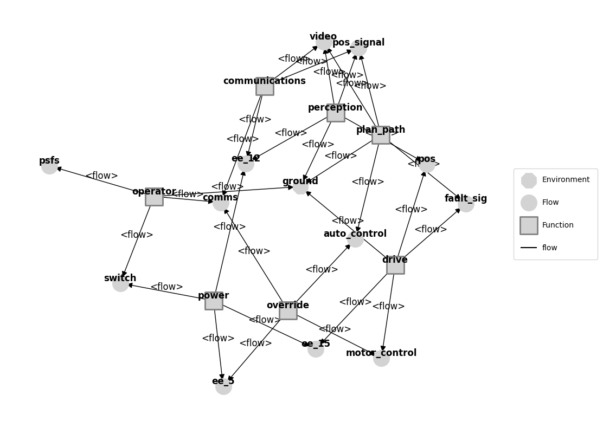
fig.savefig("rover_structure.pdf", format="pdf", bbox_inches = 'tight', pad_inches = 0)
Visualizing Action Sequence Graph for the Controller
from examples.rover.rover_model_human import asg_pos
ag = mdl.fxns['operator'].aa.as_modelgraph()
ag.set_pos(**asg_pos)
fig, ax = ag.draw()
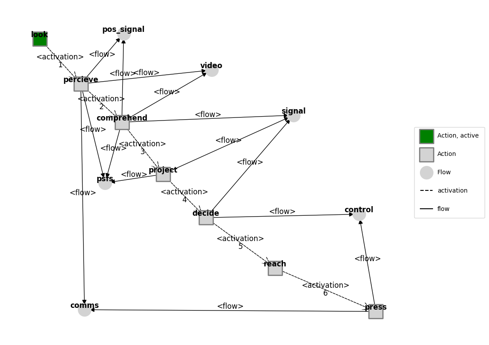
fig.savefig("action_graph.pdf", format="pdf", bbox_inches = 'tight', pad_inches = 0)
Testing behavioral simulation
Execution order
g.set_exec_order(mdl)
fig, ax = g.draw()
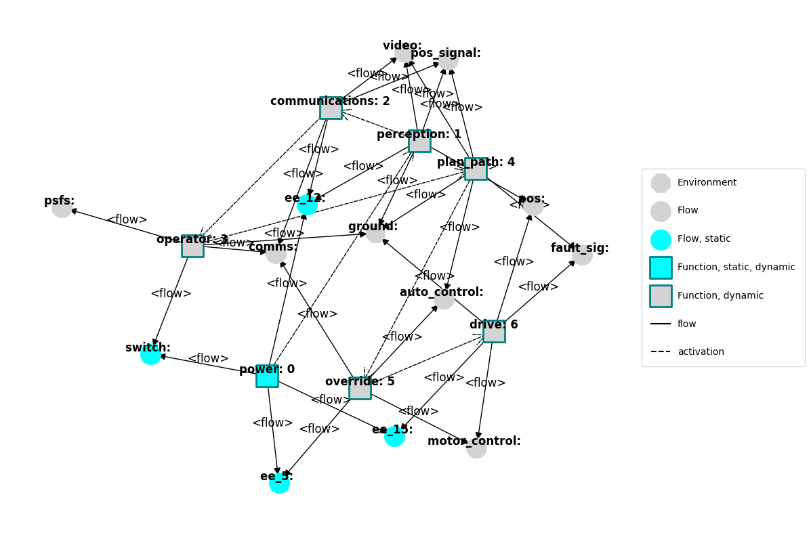
Performance on turn
mdl = RoverHuman(p={'ground': 'turn'})
endresults, mdlhist = prop.nominal(mdl)
plot_map(mdl, mdlhist)
(<Figure size 400x400 with 1 Axes>, <Axes: xlabel='x', ylabel='y'>)

Performance on sine map
mdl = RoverHuman()
endresults, mdlhist = prop.nominal(mdl)
plot_map(mdl, mdlhist)
(<Figure size 400x400 with 1 Axes>, <Axes: xlabel='x', ylabel='y'>)

from fmdtools.analyze.phases import from_hist
pm = from_hist(mdlhist)
pm
{'power': PhaseMap({'off': [0.0, 0.0], 'supply': [1.0, 109.0]}, {'off': {'off'}, 'supply': {'supply'}}),
'perception': PhaseMap({'off': [0.0, 1.0], 'feed': [2.0, 109.0]}, {'off': {'off'}, 'feed': {'feed'}}),
'look': PhaseMap({'nominal': [0.0, 109.0]}, {'nominal': {'nominal'}}),
'percieve': PhaseMap({'no_action': [0.0, 1.0], 'nominal': [2.0, 109.0]}, {'no_action': {'no_action'}, 'nominal': {'nominal'}}),
'comprehend': PhaseMap({'nominal': [0.0, 109.0]}, {'nominal': {'nominal'}}),
'project': PhaseMap({'nominal': [0.0, 109.0]}, {'nominal': {'nominal'}}),
'decide': PhaseMap({'nominal': [0.0, 109.0]}, {'nominal': {'nominal'}}),
'reach': PhaseMap({'nominal': [0.0, 109.0]}, {'nominal': {'nominal'}}),
'plan_path': PhaseMap({'standby': [0.0, 4.0], 'drive': [5.0, 109.0]}, {'standby': {'standby'}, 'drive': {'drive'}}),
'override': PhaseMap({'off': [0.0, 1.0], 'override': [2.0, 109.0]}, {'off': {'off'}, 'override': {'override'}})}
phase_fig = pm['override'].plot()
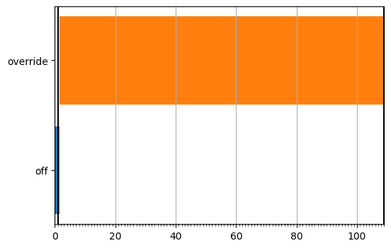
Testing Faults
#app=SampleApproach(mdl, faults='Controller', phases={'drive':phases['Operations']['drive']})
fd = FaultDomain(mdl)
fd.add_all_fxn_modes('operator')
fd
FaultDomain with faults:
-('roverhuman.fxns.operator.aa.acts.look', 'failed_no_action')
-('roverhuman.fxns.operator.aa.acts.percieve', 'failed_no_action')
-('roverhuman.fxns.operator.aa.acts.percieve', 'not_visible')
-('roverhuman.fxns.operator.aa.acts.percieve', 'wrong_position')
-('roverhuman.fxns.operator.aa.acts.comprehend', 'failed_no_action')
-('roverhuman.fxns.operator.aa.acts.project', 'failed_fast')
-('roverhuman.fxns.operator.aa.acts.project', 'failed_no_action')
-('roverhuman.fxns.operator.aa.acts.project', 'failed_slow')
-('roverhuman.fxns.operator.aa.acts.project', 'failed_turn_left')
-('roverhuman.fxns.operator.aa.acts.project', 'failed_turn_right')
-...more
fs = FaultSample(fd, phasemap = pm['override'])
fs.add_fault_phases('override')
fs
FaultSample of scenarios:
- roverhuman_fxns_operator_aa_acts_look_failed_no_action_t56p0
- roverhuman_fxns_operator_aa_acts_percieve_failed_no_action_t56p0
- roverhuman_fxns_operator_aa_acts_percieve_not_visible_t56p0
- roverhuman_fxns_operator_aa_acts_percieve_wrong_position_t56p0
- roverhuman_fxns_operator_aa_acts_comprehend_failed_no_action_t56p0
- roverhuman_fxns_operator_aa_acts_project_failed_fast_t56p0
- roverhuman_fxns_operator_aa_acts_project_failed_no_action_t56p0
- roverhuman_fxns_operator_aa_acts_project_failed_slow_t56p0
- roverhuman_fxns_operator_aa_acts_project_failed_turn_left_t56p0
- roverhuman_fxns_operator_aa_acts_project_failed_turn_right_t56p0
- ... (19 total)
fs.scenarios()
[SingleFaultScenario(sequence={56.0: Injection(faults={'roverhuman.fxns.operator.aa.acts.look': ['failed_no_action']}, disturbances={})}, times=(56.0,), function='roverhuman.fxns.operator.aa.acts.look', fault='failed_no_action', rate=1.0, name='roverhuman_fxns_operator_aa_acts_look_failed_no_action_t56p0', time=56.0, phase='override'),
SingleFaultScenario(sequence={56.0: Injection(faults={'roverhuman.fxns.operator.aa.acts.percieve': ['failed_no_action']}, disturbances={})}, times=(56.0,), function='roverhuman.fxns.operator.aa.acts.percieve', fault='failed_no_action', rate=1.0, name='roverhuman_fxns_operator_aa_acts_percieve_failed_no_action_t56p0', time=56.0, phase='override'),
SingleFaultScenario(sequence={56.0: Injection(faults={'roverhuman.fxns.operator.aa.acts.percieve': ['not_visible']}, disturbances={})}, times=(56.0,), function='roverhuman.fxns.operator.aa.acts.percieve', fault='not_visible', rate=1.0, name='roverhuman_fxns_operator_aa_acts_percieve_not_visible_t56p0', time=56.0, phase='override'),
SingleFaultScenario(sequence={56.0: Injection(faults={'roverhuman.fxns.operator.aa.acts.percieve': ['wrong_position']}, disturbances={})}, times=(56.0,), function='roverhuman.fxns.operator.aa.acts.percieve', fault='wrong_position', rate=1.0, name='roverhuman_fxns_operator_aa_acts_percieve_wrong_position_t56p0', time=56.0, phase='override'),
SingleFaultScenario(sequence={56.0: Injection(faults={'roverhuman.fxns.operator.aa.acts.comprehend': ['failed_no_action']}, disturbances={})}, times=(56.0,), function='roverhuman.fxns.operator.aa.acts.comprehend', fault='failed_no_action', rate=1.0, name='roverhuman_fxns_operator_aa_acts_comprehend_failed_no_action_t56p0', time=56.0, phase='override'),
SingleFaultScenario(sequence={56.0: Injection(faults={'roverhuman.fxns.operator.aa.acts.project': ['failed_fast']}, disturbances={})}, times=(56.0,), function='roverhuman.fxns.operator.aa.acts.project', fault='failed_fast', rate=1.0, name='roverhuman_fxns_operator_aa_acts_project_failed_fast_t56p0', time=56.0, phase='override'),
SingleFaultScenario(sequence={56.0: Injection(faults={'roverhuman.fxns.operator.aa.acts.project': ['failed_no_action']}, disturbances={})}, times=(56.0,), function='roverhuman.fxns.operator.aa.acts.project', fault='failed_no_action', rate=1.0, name='roverhuman_fxns_operator_aa_acts_project_failed_no_action_t56p0', time=56.0, phase='override'),
SingleFaultScenario(sequence={56.0: Injection(faults={'roverhuman.fxns.operator.aa.acts.project': ['failed_slow']}, disturbances={})}, times=(56.0,), function='roverhuman.fxns.operator.aa.acts.project', fault='failed_slow', rate=1.0, name='roverhuman_fxns_operator_aa_acts_project_failed_slow_t56p0', time=56.0, phase='override'),
SingleFaultScenario(sequence={56.0: Injection(faults={'roverhuman.fxns.operator.aa.acts.project': ['failed_turn_left']}, disturbances={})}, times=(56.0,), function='roverhuman.fxns.operator.aa.acts.project', fault='failed_turn_left', rate=1.0, name='roverhuman_fxns_operator_aa_acts_project_failed_turn_left_t56p0', time=56.0, phase='override'),
SingleFaultScenario(sequence={56.0: Injection(faults={'roverhuman.fxns.operator.aa.acts.project': ['failed_turn_right']}, disturbances={})}, times=(56.0,), function='roverhuman.fxns.operator.aa.acts.project', fault='failed_turn_right', rate=1.0, name='roverhuman_fxns_operator_aa_acts_project_failed_turn_right_t56p0', time=56.0, phase='override'),
SingleFaultScenario(sequence={56.0: Injection(faults={'roverhuman.fxns.operator.aa.acts.decide': ['failed_fast']}, disturbances={})}, times=(56.0,), function='roverhuman.fxns.operator.aa.acts.decide', fault='failed_fast', rate=1.0, name='roverhuman_fxns_operator_aa_acts_decide_failed_fast_t56p0', time=56.0, phase='override'),
SingleFaultScenario(sequence={56.0: Injection(faults={'roverhuman.fxns.operator.aa.acts.decide': ['failed_no_action']}, disturbances={})}, times=(56.0,), function='roverhuman.fxns.operator.aa.acts.decide', fault='failed_no_action', rate=1.0, name='roverhuman_fxns_operator_aa_acts_decide_failed_no_action_t56p0', time=56.0, phase='override'),
SingleFaultScenario(sequence={56.0: Injection(faults={'roverhuman.fxns.operator.aa.acts.decide': ['failed_slow']}, disturbances={})}, times=(56.0,), function='roverhuman.fxns.operator.aa.acts.decide', fault='failed_slow', rate=1.0, name='roverhuman_fxns_operator_aa_acts_decide_failed_slow_t56p0', time=56.0, phase='override'),
SingleFaultScenario(sequence={56.0: Injection(faults={'roverhuman.fxns.operator.aa.acts.decide': ['failed_turn_left']}, disturbances={})}, times=(56.0,), function='roverhuman.fxns.operator.aa.acts.decide', fault='failed_turn_left', rate=1.0, name='roverhuman_fxns_operator_aa_acts_decide_failed_turn_left_t56p0', time=56.0, phase='override'),
SingleFaultScenario(sequence={56.0: Injection(faults={'roverhuman.fxns.operator.aa.acts.decide': ['failed_turn_right']}, disturbances={})}, times=(56.0,), function='roverhuman.fxns.operator.aa.acts.decide', fault='failed_turn_right', rate=1.0, name='roverhuman_fxns_operator_aa_acts_decide_failed_turn_right_t56p0', time=56.0, phase='override'),
SingleFaultScenario(sequence={56.0: Injection(faults={'roverhuman.fxns.operator.aa.acts.reach': ['failed_no_action']}, disturbances={})}, times=(56.0,), function='roverhuman.fxns.operator.aa.acts.reach', fault='failed_no_action', rate=1.0, name='roverhuman_fxns_operator_aa_acts_reach_failed_no_action_t56p0', time=56.0, phase='override'),
SingleFaultScenario(sequence={56.0: Injection(faults={'roverhuman.fxns.operator.aa.acts.press': ['failed_left']}, disturbances={})}, times=(56.0,), function='roverhuman.fxns.operator.aa.acts.press', fault='failed_left', rate=1.0, name='roverhuman_fxns_operator_aa_acts_press_failed_left_t56p0', time=56.0, phase='override'),
SingleFaultScenario(sequence={56.0: Injection(faults={'roverhuman.fxns.operator.aa.acts.press': ['failed_right']}, disturbances={})}, times=(56.0,), function='roverhuman.fxns.operator.aa.acts.press', fault='failed_right', rate=1.0, name='roverhuman_fxns_operator_aa_acts_press_failed_right_t56p0', time=56.0, phase='override'),
SingleFaultScenario(sequence={56.0: Injection(faults={'roverhuman.fxns.operator.aa.acts.press': ['no_press']}, disturbances={})}, times=(56.0,), function='roverhuman.fxns.operator.aa.acts.press', fault='no_press', rate=1.0, name='roverhuman_fxns_operator_aa_acts_press_no_press_t56p0', time=56.0, phase='override')]
ecs, hists = prop.fault_sample(mdl, fs)
SCENARIOS COMPLETE: 0%| | 0/19 [00:00<?, ?it/s]
SCENARIOS COMPLETE: 5%|▌ | 1/19 [00:00<00:03, 4.88it/s]
SCENARIOS COMPLETE: 11%|█ | 2/19 [00:00<00:04, 3.44it/s]
SCENARIOS COMPLETE: 16%|█▌ | 3/19 [00:00<00:05, 3.15it/s]
SCENARIOS COMPLETE: 21%|██ | 4/19 [00:01<00:04, 3.01it/s]
SCENARIOS COMPLETE: 26%|██▋ | 5/19 [00:01<00:04, 3.48it/s]
SCENARIOS COMPLETE: 32%|███▏ | 6/19 [00:01<00:03, 3.87it/s]
SCENARIOS COMPLETE: 37%|███▋ | 7/19 [00:01<00:02, 4.11it/s]
SCENARIOS COMPLETE: 42%|████▏ | 8/19 [00:02<00:03, 3.02it/s]
SCENARIOS COMPLETE: 47%|████▋ | 9/19 [00:02<00:02, 3.43it/s]
SCENARIOS COMPLETE: 53%|█████▎ | 10/19 [00:02<00:02, 3.81it/s]
SCENARIOS COMPLETE: 58%|█████▊ | 11/19 [00:03<00:01, 4.04it/s]
SCENARIOS COMPLETE: 63%|██████▎ | 12/19 [00:03<00:01, 4.18it/s]
SCENARIOS COMPLETE: 68%|██████▊ | 13/19 [00:03<00:01, 4.34it/s]
SCENARIOS COMPLETE: 74%|███████▎ | 14/19 [00:03<00:01, 4.47it/s]
SCENARIOS COMPLETE: 79%|███████▉ | 15/19 [00:03<00:00, 4.55it/s]
SCENARIOS COMPLETE: 84%|████████▍ | 16/19 [00:04<00:00, 4.62it/s]
SCENARIOS COMPLETE: 89%|████████▉ | 17/19 [00:04<00:00, 3.86it/s]
SCENARIOS COMPLETE: 95%|█████████▍| 18/19 [00:04<00:00, 3.43it/s]
SCENARIOS COMPLETE: 100%|██████████| 19/19 [00:05<00:00, 3.21it/s]
SCENARIOS COMPLETE: 100%|██████████| 19/19 [00:05<00:00, 3.68it/s]
fig, ax = plot_map(mdl, hists)
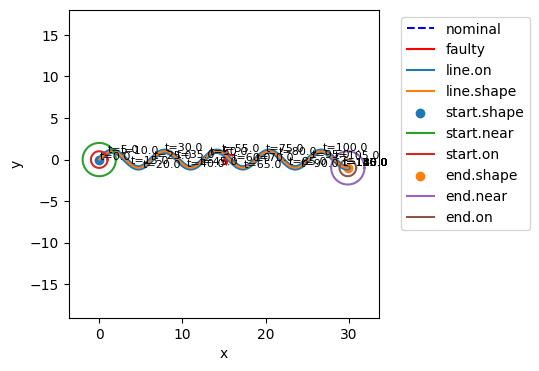
fig, ax = plot_map(mdl, hists)
ax.set_xlim(10, 20)
ax.set_ylim(-5, 5)
(-5.0, 5.0)
fig.savefig("rover_map.pdf", format="pdf", bbox_inches = 'tight', pad_inches = 0)
Below shows the impact of each fault:
tab = an.tabulate.result_summary_fmea(ecs, hists,
*mdl.flows, *mdl.fxns,
metrics = ["in_bound", "at_finish", "end_dist", "faults", "classification", "end_x", "end_y"])
tab
| degraded | faulty | in_bound | at_finish | end_dist | faults | classification | end_x | end_y | |
|---|---|---|---|---|---|---|---|---|---|
| roverhuman_fxns_operator_aa_acts_look_failed_no_action_t56p0 | ['ground', 'psfs', 'pos_signal', 'pos', 'video... | ['operator'] | False | False | 13.663813 | [look.failed_no_action] | incomplete mission faulty | 15.24424 | -0.529458 |
| roverhuman_fxns_operator_aa_acts_percieve_failed_no_action_t56p0 | ['ground'] | [] | True | True | 0.0 | [] | nominal mission | 29.254775 | -0.782764 |
| roverhuman_fxns_operator_aa_acts_percieve_not_visible_t56p0 | ['ground'] | [] | True | True | 0.0 | [] | nominal mission | 29.254775 | -0.782764 |
| roverhuman_fxns_operator_aa_acts_percieve_wrong_position_t56p0 | ['ground'] | [] | True | True | 0.0 | [] | nominal mission | 29.254775 | -0.782764 |
| roverhuman_fxns_operator_aa_acts_comprehend_failed_no_action_t56p0 | ['ground', 'psfs', 'pos_signal', 'pos', 'video... | ['operator'] | False | False | 13.663813 | [percieve.not_visible, comprehend.failed_no_ac... | incomplete mission faulty | 15.24424 | -0.529458 |
| roverhuman_fxns_operator_aa_acts_project_failed_fast_t56p0 | ['ground', 'pos_signal', 'pos', 'ee_15', 'vide... | ['operator'] | False | False | 12.955107 | [percieve.not_visible, project.failed_fast] | incomplete mission faulty | 16.023518 | 0.480458 |
| roverhuman_fxns_operator_aa_acts_project_failed_no_action_t56p0 | ['ground', 'psfs', 'pos_signal', 'pos', 'video... | ['operator'] | False | False | 13.663813 | [percieve.not_visible, project.failed_no_action] | incomplete mission faulty | 15.24424 | -0.529458 |
| roverhuman_fxns_operator_aa_acts_project_failed_slow_t56p0 | ['ground', 'psfs', 'pos_signal', 'pos', 'ee_12... | ['operator'] | True | False | 9.31949 | [project.failed_slow] | incomplete mission faulty | 19.740872 | 0.81243 |
| roverhuman_fxns_operator_aa_acts_project_failed_turn_left_t56p0 | ['ground', 'pos_signal', 'pos', 'video', 'auto... | ['operator'] | False | False | 14.057688 | [percieve.not_visible, project.failed_turn_left] | incomplete mission faulty | 14.862043 | -0.251773 |
| roverhuman_fxns_operator_aa_acts_project_failed_turn_right_t56p0 | ['ground', 'pos_signal', 'pos', 'video', 'auto... | ['operator'] | False | False | 13.693675 | [percieve.not_visible, project.failed_turn_right] | incomplete mission faulty | 15.363988 | 1.140047 |
| roverhuman_fxns_operator_aa_acts_decide_failed_fast_t56p0 | ['ground', 'psfs', 'pos_signal', 'pos', 'video... | ['operator'] | False | False | 13.663813 | [percieve.not_visible, decide.failed_fast] | incomplete mission faulty | 15.24424 | -0.529458 |
| roverhuman_fxns_operator_aa_acts_decide_failed_no_action_t56p0 | ['ground', 'psfs', 'pos_signal', 'pos', 'video... | ['operator'] | False | False | 13.663813 | [percieve.not_visible, decide.failed_no_action] | incomplete mission faulty | 15.24424 | -0.529458 |
| roverhuman_fxns_operator_aa_acts_decide_failed_slow_t56p0 | ['ground', 'psfs', 'pos_signal', 'pos', 'video... | ['operator'] | False | False | 13.663813 | [percieve.not_visible, decide.failed_slow] | incomplete mission faulty | 15.24424 | -0.529458 |
| roverhuman_fxns_operator_aa_acts_decide_failed_turn_left_t56p0 | ['ground', 'psfs', 'pos_signal', 'pos', 'video... | ['operator'] | False | False | 13.663813 | [percieve.not_visible, decide.failed_turn_left] | incomplete mission faulty | 15.24424 | -0.529458 |
| roverhuman_fxns_operator_aa_acts_decide_failed_turn_right_t56p0 | ['ground', 'psfs', 'pos_signal', 'pos', 'video... | ['operator'] | False | False | 13.663813 | [percieve.not_visible, decide.failed_turn_right] | incomplete mission faulty | 15.24424 | -0.529458 |
| roverhuman_fxns_operator_aa_acts_reach_failed_no_action_t56p0 | ['ground', 'psfs', 'pos_signal', 'pos', 'video... | ['operator'] | False | False | 13.663813 | [percieve.not_visible, reach.failed_no_action] | incomplete mission faulty | 15.24424 | -0.529458 |
| roverhuman_fxns_operator_aa_acts_press_failed_left_t56p0 | ['ground', 'operator'] | ['operator'] | True | True | 0.0 | [press.failed_left] | faulty | 29.254775 | -0.782764 |
| roverhuman_fxns_operator_aa_acts_press_failed_right_t56p0 | ['ground', 'operator'] | ['operator'] | True | True | 0.0 | [press.failed_right] | faulty | 29.254775 | -0.782764 |
| roverhuman_fxns_operator_aa_acts_press_no_press_t56p0 | ['ground', 'operator'] | ['operator'] | True | True | 0.0 | [press.no_press] | faulty | 29.254775 | -0.782764 |
| nominal | [] | [] | True | True | 0.0 | [] | nominal mission | 29.254775 | -0.782764 |
tab.sort_values('end_dist', ascending=False)
| degraded | faulty | in_bound | at_finish | end_dist | faults | classification | end_x | end_y | |
|---|---|---|---|---|---|---|---|---|---|
| roverhuman_fxns_operator_aa_acts_project_failed_turn_left_t56p0 | ['ground', 'pos_signal', 'pos', 'video', 'auto... | ['operator'] | False | False | 14.057688 | [percieve.not_visible, project.failed_turn_left] | incomplete mission faulty | 14.862043 | -0.251773 |
| roverhuman_fxns_operator_aa_acts_project_failed_turn_right_t56p0 | ['ground', 'pos_signal', 'pos', 'video', 'auto... | ['operator'] | False | False | 13.693675 | [percieve.not_visible, project.failed_turn_right] | incomplete mission faulty | 15.363988 | 1.140047 |
| roverhuman_fxns_operator_aa_acts_look_failed_no_action_t56p0 | ['ground', 'psfs', 'pos_signal', 'pos', 'video... | ['operator'] | False | False | 13.663813 | [look.failed_no_action] | incomplete mission faulty | 15.24424 | -0.529458 |
| roverhuman_fxns_operator_aa_acts_reach_failed_no_action_t56p0 | ['ground', 'psfs', 'pos_signal', 'pos', 'video... | ['operator'] | False | False | 13.663813 | [percieve.not_visible, reach.failed_no_action] | incomplete mission faulty | 15.24424 | -0.529458 |
| roverhuman_fxns_operator_aa_acts_decide_failed_turn_right_t56p0 | ['ground', 'psfs', 'pos_signal', 'pos', 'video... | ['operator'] | False | False | 13.663813 | [percieve.not_visible, decide.failed_turn_right] | incomplete mission faulty | 15.24424 | -0.529458 |
| roverhuman_fxns_operator_aa_acts_decide_failed_turn_left_t56p0 | ['ground', 'psfs', 'pos_signal', 'pos', 'video... | ['operator'] | False | False | 13.663813 | [percieve.not_visible, decide.failed_turn_left] | incomplete mission faulty | 15.24424 | -0.529458 |
| roverhuman_fxns_operator_aa_acts_decide_failed_slow_t56p0 | ['ground', 'psfs', 'pos_signal', 'pos', 'video... | ['operator'] | False | False | 13.663813 | [percieve.not_visible, decide.failed_slow] | incomplete mission faulty | 15.24424 | -0.529458 |
| roverhuman_fxns_operator_aa_acts_decide_failed_no_action_t56p0 | ['ground', 'psfs', 'pos_signal', 'pos', 'video... | ['operator'] | False | False | 13.663813 | [percieve.not_visible, decide.failed_no_action] | incomplete mission faulty | 15.24424 | -0.529458 |
| roverhuman_fxns_operator_aa_acts_decide_failed_fast_t56p0 | ['ground', 'psfs', 'pos_signal', 'pos', 'video... | ['operator'] | False | False | 13.663813 | [percieve.not_visible, decide.failed_fast] | incomplete mission faulty | 15.24424 | -0.529458 |
| roverhuman_fxns_operator_aa_acts_project_failed_no_action_t56p0 | ['ground', 'psfs', 'pos_signal', 'pos', 'video... | ['operator'] | False | False | 13.663813 | [percieve.not_visible, project.failed_no_action] | incomplete mission faulty | 15.24424 | -0.529458 |
| roverhuman_fxns_operator_aa_acts_comprehend_failed_no_action_t56p0 | ['ground', 'psfs', 'pos_signal', 'pos', 'video... | ['operator'] | False | False | 13.663813 | [percieve.not_visible, comprehend.failed_no_ac... | incomplete mission faulty | 15.24424 | -0.529458 |
| roverhuman_fxns_operator_aa_acts_project_failed_fast_t56p0 | ['ground', 'pos_signal', 'pos', 'ee_15', 'vide... | ['operator'] | False | False | 12.955107 | [percieve.not_visible, project.failed_fast] | incomplete mission faulty | 16.023518 | 0.480458 |
| roverhuman_fxns_operator_aa_acts_project_failed_slow_t56p0 | ['ground', 'psfs', 'pos_signal', 'pos', 'ee_12... | ['operator'] | True | False | 9.31949 | [project.failed_slow] | incomplete mission faulty | 19.740872 | 0.81243 |
| roverhuman_fxns_operator_aa_acts_percieve_failed_no_action_t56p0 | ['ground'] | [] | True | True | 0.0 | [] | nominal mission | 29.254775 | -0.782764 |
| roverhuman_fxns_operator_aa_acts_percieve_wrong_position_t56p0 | ['ground'] | [] | True | True | 0.0 | [] | nominal mission | 29.254775 | -0.782764 |
| roverhuman_fxns_operator_aa_acts_percieve_not_visible_t56p0 | ['ground'] | [] | True | True | 0.0 | [] | nominal mission | 29.254775 | -0.782764 |
| roverhuman_fxns_operator_aa_acts_press_failed_left_t56p0 | ['ground', 'operator'] | ['operator'] | True | True | 0.0 | [press.failed_left] | faulty | 29.254775 | -0.782764 |
| roverhuman_fxns_operator_aa_acts_press_failed_right_t56p0 | ['ground', 'operator'] | ['operator'] | True | True | 0.0 | [press.failed_right] | faulty | 29.254775 | -0.782764 |
| roverhuman_fxns_operator_aa_acts_press_no_press_t56p0 | ['ground', 'operator'] | ['operator'] | True | True | 0.0 | [press.no_press] | faulty | 29.254775 | -0.782764 |
| nominal | [] | [] | True | True | 0.0 | [] | nominal mission | 29.254775 | -0.782764 |
print(tab.to_latex())
\begin{tabular}{llllllllll}
\toprule
& degraded & faulty & in_bound & at_finish & end_dist & faults & classification & end_x & end_y \\
\midrule
roverhuman_fxns_operator_aa_acts_look_failed_no_action_t56p0 & ['ground', 'psfs', 'pos_signal', 'pos', 'video', 'auto_control', 'motor_control', 'comms', 'power', 'operator', 'plan_path'] & ['operator'] & False & False & 13.663813 & ['look.failed_no_action'] & incomplete mission faulty & 15.244240 & -0.529458 \\
roverhuman_fxns_operator_aa_acts_percieve_failed_no_action_t56p0 & ['ground'] & [] & True & True & 0.000000 & [] & nominal mission & 29.254775 & -0.782764 \\
roverhuman_fxns_operator_aa_acts_percieve_not_visible_t56p0 & ['ground'] & [] & True & True & 0.000000 & [] & nominal mission & 29.254775 & -0.782764 \\
roverhuman_fxns_operator_aa_acts_percieve_wrong_position_t56p0 & ['ground'] & [] & True & True & 0.000000 & [] & nominal mission & 29.254775 & -0.782764 \\
roverhuman_fxns_operator_aa_acts_comprehend_failed_no_action_t56p0 & ['ground', 'psfs', 'pos_signal', 'pos', 'video', 'auto_control', 'motor_control', 'comms', 'power', 'operator', 'plan_path'] & ['operator'] & False & False & 13.663813 & ['percieve.not_visible', 'comprehend.failed_no_action'] & incomplete mission faulty & 15.244240 & -0.529458 \\
roverhuman_fxns_operator_aa_acts_project_failed_fast_t56p0 & ['ground', 'pos_signal', 'pos', 'ee_15', 'video', 'auto_control', 'motor_control', 'comms', 'power', 'operator', 'plan_path'] & ['operator'] & False & False & 12.955107 & ['percieve.not_visible', 'project.failed_fast'] & incomplete mission faulty & 16.023518 & 0.480458 \\
roverhuman_fxns_operator_aa_acts_project_failed_no_action_t56p0 & ['ground', 'psfs', 'pos_signal', 'pos', 'video', 'auto_control', 'motor_control', 'comms', 'power', 'operator', 'plan_path'] & ['operator'] & False & False & 13.663813 & ['percieve.not_visible', 'project.failed_no_action'] & incomplete mission faulty & 15.244240 & -0.529458 \\
roverhuman_fxns_operator_aa_acts_project_failed_slow_t56p0 & ['ground', 'psfs', 'pos_signal', 'pos', 'ee_12', 'ee_5', 'ee_15', 'video', 'auto_control', 'motor_control', 'switch', 'comms', 'power', 'perception', 'operator', 'plan_path', 'override'] & ['operator'] & True & False & 9.319490 & ['project.failed_slow'] & incomplete mission faulty & 19.740872 & 0.812430 \\
roverhuman_fxns_operator_aa_acts_project_failed_turn_left_t56p0 & ['ground', 'pos_signal', 'pos', 'video', 'auto_control', 'motor_control', 'comms', 'power', 'operator', 'plan_path'] & ['operator'] & False & False & 14.057688 & ['percieve.not_visible', 'project.failed_turn_left'] & incomplete mission faulty & 14.862043 & -0.251773 \\
roverhuman_fxns_operator_aa_acts_project_failed_turn_right_t56p0 & ['ground', 'pos_signal', 'pos', 'video', 'auto_control', 'motor_control', 'comms', 'power', 'operator', 'plan_path'] & ['operator'] & False & False & 13.693675 & ['percieve.not_visible', 'project.failed_turn_right'] & incomplete mission faulty & 15.363988 & 1.140047 \\
roverhuman_fxns_operator_aa_acts_decide_failed_fast_t56p0 & ['ground', 'psfs', 'pos_signal', 'pos', 'video', 'auto_control', 'motor_control', 'comms', 'power', 'operator', 'plan_path'] & ['operator'] & False & False & 13.663813 & ['percieve.not_visible', 'decide.failed_fast'] & incomplete mission faulty & 15.244240 & -0.529458 \\
roverhuman_fxns_operator_aa_acts_decide_failed_no_action_t56p0 & ['ground', 'psfs', 'pos_signal', 'pos', 'video', 'auto_control', 'motor_control', 'comms', 'power', 'operator', 'plan_path'] & ['operator'] & False & False & 13.663813 & ['percieve.not_visible', 'decide.failed_no_action'] & incomplete mission faulty & 15.244240 & -0.529458 \\
roverhuman_fxns_operator_aa_acts_decide_failed_slow_t56p0 & ['ground', 'psfs', 'pos_signal', 'pos', 'video', 'auto_control', 'motor_control', 'comms', 'power', 'operator', 'plan_path'] & ['operator'] & False & False & 13.663813 & ['percieve.not_visible', 'decide.failed_slow'] & incomplete mission faulty & 15.244240 & -0.529458 \\
roverhuman_fxns_operator_aa_acts_decide_failed_turn_left_t56p0 & ['ground', 'psfs', 'pos_signal', 'pos', 'video', 'auto_control', 'motor_control', 'comms', 'power', 'operator', 'plan_path'] & ['operator'] & False & False & 13.663813 & ['percieve.not_visible', 'decide.failed_turn_left'] & incomplete mission faulty & 15.244240 & -0.529458 \\
roverhuman_fxns_operator_aa_acts_decide_failed_turn_right_t56p0 & ['ground', 'psfs', 'pos_signal', 'pos', 'video', 'auto_control', 'motor_control', 'comms', 'power', 'operator', 'plan_path'] & ['operator'] & False & False & 13.663813 & ['percieve.not_visible', 'decide.failed_turn_right'] & incomplete mission faulty & 15.244240 & -0.529458 \\
roverhuman_fxns_operator_aa_acts_reach_failed_no_action_t56p0 & ['ground', 'psfs', 'pos_signal', 'pos', 'video', 'auto_control', 'motor_control', 'comms', 'power', 'operator', 'plan_path'] & ['operator'] & False & False & 13.663813 & ['percieve.not_visible', 'reach.failed_no_action'] & incomplete mission faulty & 15.244240 & -0.529458 \\
roverhuman_fxns_operator_aa_acts_press_failed_left_t56p0 & ['ground', 'operator'] & ['operator'] & True & True & 0.000000 & ['press.failed_left'] & faulty & 29.254775 & -0.782764 \\
roverhuman_fxns_operator_aa_acts_press_failed_right_t56p0 & ['ground', 'operator'] & ['operator'] & True & True & 0.000000 & ['press.failed_right'] & faulty & 29.254775 & -0.782764 \\
roverhuman_fxns_operator_aa_acts_press_no_press_t56p0 & ['ground', 'operator'] & ['operator'] & True & True & 0.000000 & ['press.no_press'] & faulty & 29.254775 & -0.782764 \\
nominal & [] & [] & True & True & 0.000000 & [] & nominal mission & 29.254775 & -0.782764 \\
\bottomrule
\end{tabular}
As shown, most modes now have an effect.
Examining Performance Shaping Factors
from examples.rover.rover_model_human import RoverHumanParam
pd = ParameterDomain(RoverHumanParam)
#pd.add_constant('ground.linetype', 'sine')
#pd.add_constant('ground.amp', 4)
pd.add_variable('psfs.fatigue', var_lim=(0, 11))
pd.add_variable('psfs.attention', var_lim=(0, 11))
pd
ParameterDomain with:
- variables: {'psfs.fatigue': (0, 11), 'psfs.attention': (0, 11)}
- constants: {}
- parameter_initializer: RoverHumanParam
ps = ParameterSample(pd)
ps.add_variable_ranges(comb_kwargs={'resolution': 1})
ps
ParameterSample of scenarios:
- rep0_range_0
- rep0_range_1
- rep0_range_2
- rep0_range_3
- rep0_range_4
- rep0_range_5
- rep0_range_6
- rep0_range_7
- rep0_range_8
- rep0_range_9
- ... (144 total)
ps.scenarios()
[ParameterScenario(sequence={}, times=(), p={'psfs': {'fatigue': 0, 'attention': 0}}, r={}, sp={}, prob=0.006944444444444444, inputparams={0: 0, 1: 0}, rangeid='', name='rep0_range_0'),
ParameterScenario(sequence={}, times=(), p={'psfs': {'fatigue': 0, 'attention': 1}}, r={}, sp={}, prob=0.006944444444444444, inputparams={0: 0, 1: 1}, rangeid='', name='rep0_range_1'),
ParameterScenario(sequence={}, times=(), p={'psfs': {'fatigue': 0, 'attention': 2}}, r={}, sp={}, prob=0.006944444444444444, inputparams={0: 0, 1: 2}, rangeid='', name='rep0_range_2'),
ParameterScenario(sequence={}, times=(), p={'psfs': {'fatigue': 0, 'attention': 3}}, r={}, sp={}, prob=0.006944444444444444, inputparams={0: 0, 1: 3}, rangeid='', name='rep0_range_3'),
ParameterScenario(sequence={}, times=(), p={'psfs': {'fatigue': 0, 'attention': 4}}, r={}, sp={}, prob=0.006944444444444444, inputparams={0: 0, 1: 4}, rangeid='', name='rep0_range_4'),
ParameterScenario(sequence={}, times=(), p={'psfs': {'fatigue': 0, 'attention': 5}}, r={}, sp={}, prob=0.006944444444444444, inputparams={0: 0, 1: 5}, rangeid='', name='rep0_range_5'),
ParameterScenario(sequence={}, times=(), p={'psfs': {'fatigue': 0, 'attention': 6}}, r={}, sp={}, prob=0.006944444444444444, inputparams={0: 0, 1: 6}, rangeid='', name='rep0_range_6'),
ParameterScenario(sequence={}, times=(), p={'psfs': {'fatigue': 0, 'attention': 7}}, r={}, sp={}, prob=0.006944444444444444, inputparams={0: 0, 1: 7}, rangeid='', name='rep0_range_7'),
ParameterScenario(sequence={}, times=(), p={'psfs': {'fatigue': 0, 'attention': 8}}, r={}, sp={}, prob=0.006944444444444444, inputparams={0: 0, 1: 8}, rangeid='', name='rep0_range_8'),
ParameterScenario(sequence={}, times=(), p={'psfs': {'fatigue': 0, 'attention': 9}}, r={}, sp={}, prob=0.006944444444444444, inputparams={0: 0, 1: 9}, rangeid='', name='rep0_range_9'),
ParameterScenario(sequence={}, times=(), p={'psfs': {'fatigue': 0, 'attention': 10}}, r={}, sp={}, prob=0.006944444444444444, inputparams={0: 0, 1: 10}, rangeid='', name='rep0_range_10'),
ParameterScenario(sequence={}, times=(), p={'psfs': {'fatigue': 0, 'attention': 11}}, r={}, sp={}, prob=0.006944444444444444, inputparams={0: 0, 1: 11}, rangeid='', name='rep0_range_11'),
ParameterScenario(sequence={}, times=(), p={'psfs': {'fatigue': 1, 'attention': 0}}, r={}, sp={}, prob=0.006944444444444444, inputparams={0: 1, 1: 0}, rangeid='', name='rep0_range_12'),
ParameterScenario(sequence={}, times=(), p={'psfs': {'fatigue': 1, 'attention': 1}}, r={}, sp={}, prob=0.006944444444444444, inputparams={0: 1, 1: 1}, rangeid='', name='rep0_range_13'),
ParameterScenario(sequence={}, times=(), p={'psfs': {'fatigue': 1, 'attention': 2}}, r={}, sp={}, prob=0.006944444444444444, inputparams={0: 1, 1: 2}, rangeid='', name='rep0_range_14'),
ParameterScenario(sequence={}, times=(), p={'psfs': {'fatigue': 1, 'attention': 3}}, r={}, sp={}, prob=0.006944444444444444, inputparams={0: 1, 1: 3}, rangeid='', name='rep0_range_15'),
ParameterScenario(sequence={}, times=(), p={'psfs': {'fatigue': 1, 'attention': 4}}, r={}, sp={}, prob=0.006944444444444444, inputparams={0: 1, 1: 4}, rangeid='', name='rep0_range_16'),
ParameterScenario(sequence={}, times=(), p={'psfs': {'fatigue': 1, 'attention': 5}}, r={}, sp={}, prob=0.006944444444444444, inputparams={0: 1, 1: 5}, rangeid='', name='rep0_range_17'),
ParameterScenario(sequence={}, times=(), p={'psfs': {'fatigue': 1, 'attention': 6}}, r={}, sp={}, prob=0.006944444444444444, inputparams={0: 1, 1: 6}, rangeid='', name='rep0_range_18'),
ParameterScenario(sequence={}, times=(), p={'psfs': {'fatigue': 1, 'attention': 7}}, r={}, sp={}, prob=0.006944444444444444, inputparams={0: 1, 1: 7}, rangeid='', name='rep0_range_19'),
ParameterScenario(sequence={}, times=(), p={'psfs': {'fatigue': 1, 'attention': 8}}, r={}, sp={}, prob=0.006944444444444444, inputparams={0: 1, 1: 8}, rangeid='', name='rep0_range_20'),
ParameterScenario(sequence={}, times=(), p={'psfs': {'fatigue': 1, 'attention': 9}}, r={}, sp={}, prob=0.006944444444444444, inputparams={0: 1, 1: 9}, rangeid='', name='rep0_range_21'),
ParameterScenario(sequence={}, times=(), p={'psfs': {'fatigue': 1, 'attention': 10}}, r={}, sp={}, prob=0.006944444444444444, inputparams={0: 1, 1: 10}, rangeid='', name='rep0_range_22'),
ParameterScenario(sequence={}, times=(), p={'psfs': {'fatigue': 1, 'attention': 11}}, r={}, sp={}, prob=0.006944444444444444, inputparams={0: 1, 1: 11}, rangeid='', name='rep0_range_23'),
ParameterScenario(sequence={}, times=(), p={'psfs': {'fatigue': 2, 'attention': 0}}, r={}, sp={}, prob=0.006944444444444444, inputparams={0: 2, 1: 0}, rangeid='', name='rep0_range_24'),
ParameterScenario(sequence={}, times=(), p={'psfs': {'fatigue': 2, 'attention': 1}}, r={}, sp={}, prob=0.006944444444444444, inputparams={0: 2, 1: 1}, rangeid='', name='rep0_range_25'),
ParameterScenario(sequence={}, times=(), p={'psfs': {'fatigue': 2, 'attention': 2}}, r={}, sp={}, prob=0.006944444444444444, inputparams={0: 2, 1: 2}, rangeid='', name='rep0_range_26'),
ParameterScenario(sequence={}, times=(), p={'psfs': {'fatigue': 2, 'attention': 3}}, r={}, sp={}, prob=0.006944444444444444, inputparams={0: 2, 1: 3}, rangeid='', name='rep0_range_27'),
ParameterScenario(sequence={}, times=(), p={'psfs': {'fatigue': 2, 'attention': 4}}, r={}, sp={}, prob=0.006944444444444444, inputparams={0: 2, 1: 4}, rangeid='', name='rep0_range_28'),
ParameterScenario(sequence={}, times=(), p={'psfs': {'fatigue': 2, 'attention': 5}}, r={}, sp={}, prob=0.006944444444444444, inputparams={0: 2, 1: 5}, rangeid='', name='rep0_range_29'),
ParameterScenario(sequence={}, times=(), p={'psfs': {'fatigue': 2, 'attention': 6}}, r={}, sp={}, prob=0.006944444444444444, inputparams={0: 2, 1: 6}, rangeid='', name='rep0_range_30'),
ParameterScenario(sequence={}, times=(), p={'psfs': {'fatigue': 2, 'attention': 7}}, r={}, sp={}, prob=0.006944444444444444, inputparams={0: 2, 1: 7}, rangeid='', name='rep0_range_31'),
ParameterScenario(sequence={}, times=(), p={'psfs': {'fatigue': 2, 'attention': 8}}, r={}, sp={}, prob=0.006944444444444444, inputparams={0: 2, 1: 8}, rangeid='', name='rep0_range_32'),
ParameterScenario(sequence={}, times=(), p={'psfs': {'fatigue': 2, 'attention': 9}}, r={}, sp={}, prob=0.006944444444444444, inputparams={0: 2, 1: 9}, rangeid='', name='rep0_range_33'),
ParameterScenario(sequence={}, times=(), p={'psfs': {'fatigue': 2, 'attention': 10}}, r={}, sp={}, prob=0.006944444444444444, inputparams={0: 2, 1: 10}, rangeid='', name='rep0_range_34'),
ParameterScenario(sequence={}, times=(), p={'psfs': {'fatigue': 2, 'attention': 11}}, r={}, sp={}, prob=0.006944444444444444, inputparams={0: 2, 1: 11}, rangeid='', name='rep0_range_35'),
ParameterScenario(sequence={}, times=(), p={'psfs': {'fatigue': 3, 'attention': 0}}, r={}, sp={}, prob=0.006944444444444444, inputparams={0: 3, 1: 0}, rangeid='', name='rep0_range_36'),
ParameterScenario(sequence={}, times=(), p={'psfs': {'fatigue': 3, 'attention': 1}}, r={}, sp={}, prob=0.006944444444444444, inputparams={0: 3, 1: 1}, rangeid='', name='rep0_range_37'),
ParameterScenario(sequence={}, times=(), p={'psfs': {'fatigue': 3, 'attention': 2}}, r={}, sp={}, prob=0.006944444444444444, inputparams={0: 3, 1: 2}, rangeid='', name='rep0_range_38'),
ParameterScenario(sequence={}, times=(), p={'psfs': {'fatigue': 3, 'attention': 3}}, r={}, sp={}, prob=0.006944444444444444, inputparams={0: 3, 1: 3}, rangeid='', name='rep0_range_39'),
ParameterScenario(sequence={}, times=(), p={'psfs': {'fatigue': 3, 'attention': 4}}, r={}, sp={}, prob=0.006944444444444444, inputparams={0: 3, 1: 4}, rangeid='', name='rep0_range_40'),
ParameterScenario(sequence={}, times=(), p={'psfs': {'fatigue': 3, 'attention': 5}}, r={}, sp={}, prob=0.006944444444444444, inputparams={0: 3, 1: 5}, rangeid='', name='rep0_range_41'),
ParameterScenario(sequence={}, times=(), p={'psfs': {'fatigue': 3, 'attention': 6}}, r={}, sp={}, prob=0.006944444444444444, inputparams={0: 3, 1: 6}, rangeid='', name='rep0_range_42'),
ParameterScenario(sequence={}, times=(), p={'psfs': {'fatigue': 3, 'attention': 7}}, r={}, sp={}, prob=0.006944444444444444, inputparams={0: 3, 1: 7}, rangeid='', name='rep0_range_43'),
ParameterScenario(sequence={}, times=(), p={'psfs': {'fatigue': 3, 'attention': 8}}, r={}, sp={}, prob=0.006944444444444444, inputparams={0: 3, 1: 8}, rangeid='', name='rep0_range_44'),
ParameterScenario(sequence={}, times=(), p={'psfs': {'fatigue': 3, 'attention': 9}}, r={}, sp={}, prob=0.006944444444444444, inputparams={0: 3, 1: 9}, rangeid='', name='rep0_range_45'),
ParameterScenario(sequence={}, times=(), p={'psfs': {'fatigue': 3, 'attention': 10}}, r={}, sp={}, prob=0.006944444444444444, inputparams={0: 3, 1: 10}, rangeid='', name='rep0_range_46'),
ParameterScenario(sequence={}, times=(), p={'psfs': {'fatigue': 3, 'attention': 11}}, r={}, sp={}, prob=0.006944444444444444, inputparams={0: 3, 1: 11}, rangeid='', name='rep0_range_47'),
ParameterScenario(sequence={}, times=(), p={'psfs': {'fatigue': 4, 'attention': 0}}, r={}, sp={}, prob=0.006944444444444444, inputparams={0: 4, 1: 0}, rangeid='', name='rep0_range_48'),
ParameterScenario(sequence={}, times=(), p={'psfs': {'fatigue': 4, 'attention': 1}}, r={}, sp={}, prob=0.006944444444444444, inputparams={0: 4, 1: 1}, rangeid='', name='rep0_range_49'),
ParameterScenario(sequence={}, times=(), p={'psfs': {'fatigue': 4, 'attention': 2}}, r={}, sp={}, prob=0.006944444444444444, inputparams={0: 4, 1: 2}, rangeid='', name='rep0_range_50'),
ParameterScenario(sequence={}, times=(), p={'psfs': {'fatigue': 4, 'attention': 3}}, r={}, sp={}, prob=0.006944444444444444, inputparams={0: 4, 1: 3}, rangeid='', name='rep0_range_51'),
ParameterScenario(sequence={}, times=(), p={'psfs': {'fatigue': 4, 'attention': 4}}, r={}, sp={}, prob=0.006944444444444444, inputparams={0: 4, 1: 4}, rangeid='', name='rep0_range_52'),
ParameterScenario(sequence={}, times=(), p={'psfs': {'fatigue': 4, 'attention': 5}}, r={}, sp={}, prob=0.006944444444444444, inputparams={0: 4, 1: 5}, rangeid='', name='rep0_range_53'),
ParameterScenario(sequence={}, times=(), p={'psfs': {'fatigue': 4, 'attention': 6}}, r={}, sp={}, prob=0.006944444444444444, inputparams={0: 4, 1: 6}, rangeid='', name='rep0_range_54'),
ParameterScenario(sequence={}, times=(), p={'psfs': {'fatigue': 4, 'attention': 7}}, r={}, sp={}, prob=0.006944444444444444, inputparams={0: 4, 1: 7}, rangeid='', name='rep0_range_55'),
ParameterScenario(sequence={}, times=(), p={'psfs': {'fatigue': 4, 'attention': 8}}, r={}, sp={}, prob=0.006944444444444444, inputparams={0: 4, 1: 8}, rangeid='', name='rep0_range_56'),
ParameterScenario(sequence={}, times=(), p={'psfs': {'fatigue': 4, 'attention': 9}}, r={}, sp={}, prob=0.006944444444444444, inputparams={0: 4, 1: 9}, rangeid='', name='rep0_range_57'),
ParameterScenario(sequence={}, times=(), p={'psfs': {'fatigue': 4, 'attention': 10}}, r={}, sp={}, prob=0.006944444444444444, inputparams={0: 4, 1: 10}, rangeid='', name='rep0_range_58'),
ParameterScenario(sequence={}, times=(), p={'psfs': {'fatigue': 4, 'attention': 11}}, r={}, sp={}, prob=0.006944444444444444, inputparams={0: 4, 1: 11}, rangeid='', name='rep0_range_59'),
ParameterScenario(sequence={}, times=(), p={'psfs': {'fatigue': 5, 'attention': 0}}, r={}, sp={}, prob=0.006944444444444444, inputparams={0: 5, 1: 0}, rangeid='', name='rep0_range_60'),
ParameterScenario(sequence={}, times=(), p={'psfs': {'fatigue': 5, 'attention': 1}}, r={}, sp={}, prob=0.006944444444444444, inputparams={0: 5, 1: 1}, rangeid='', name='rep0_range_61'),
ParameterScenario(sequence={}, times=(), p={'psfs': {'fatigue': 5, 'attention': 2}}, r={}, sp={}, prob=0.006944444444444444, inputparams={0: 5, 1: 2}, rangeid='', name='rep0_range_62'),
ParameterScenario(sequence={}, times=(), p={'psfs': {'fatigue': 5, 'attention': 3}}, r={}, sp={}, prob=0.006944444444444444, inputparams={0: 5, 1: 3}, rangeid='', name='rep0_range_63'),
ParameterScenario(sequence={}, times=(), p={'psfs': {'fatigue': 5, 'attention': 4}}, r={}, sp={}, prob=0.006944444444444444, inputparams={0: 5, 1: 4}, rangeid='', name='rep0_range_64'),
ParameterScenario(sequence={}, times=(), p={'psfs': {'fatigue': 5, 'attention': 5}}, r={}, sp={}, prob=0.006944444444444444, inputparams={0: 5, 1: 5}, rangeid='', name='rep0_range_65'),
ParameterScenario(sequence={}, times=(), p={'psfs': {'fatigue': 5, 'attention': 6}}, r={}, sp={}, prob=0.006944444444444444, inputparams={0: 5, 1: 6}, rangeid='', name='rep0_range_66'),
ParameterScenario(sequence={}, times=(), p={'psfs': {'fatigue': 5, 'attention': 7}}, r={}, sp={}, prob=0.006944444444444444, inputparams={0: 5, 1: 7}, rangeid='', name='rep0_range_67'),
ParameterScenario(sequence={}, times=(), p={'psfs': {'fatigue': 5, 'attention': 8}}, r={}, sp={}, prob=0.006944444444444444, inputparams={0: 5, 1: 8}, rangeid='', name='rep0_range_68'),
ParameterScenario(sequence={}, times=(), p={'psfs': {'fatigue': 5, 'attention': 9}}, r={}, sp={}, prob=0.006944444444444444, inputparams={0: 5, 1: 9}, rangeid='', name='rep0_range_69'),
ParameterScenario(sequence={}, times=(), p={'psfs': {'fatigue': 5, 'attention': 10}}, r={}, sp={}, prob=0.006944444444444444, inputparams={0: 5, 1: 10}, rangeid='', name='rep0_range_70'),
ParameterScenario(sequence={}, times=(), p={'psfs': {'fatigue': 5, 'attention': 11}}, r={}, sp={}, prob=0.006944444444444444, inputparams={0: 5, 1: 11}, rangeid='', name='rep0_range_71'),
ParameterScenario(sequence={}, times=(), p={'psfs': {'fatigue': 6, 'attention': 0}}, r={}, sp={}, prob=0.006944444444444444, inputparams={0: 6, 1: 0}, rangeid='', name='rep0_range_72'),
ParameterScenario(sequence={}, times=(), p={'psfs': {'fatigue': 6, 'attention': 1}}, r={}, sp={}, prob=0.006944444444444444, inputparams={0: 6, 1: 1}, rangeid='', name='rep0_range_73'),
ParameterScenario(sequence={}, times=(), p={'psfs': {'fatigue': 6, 'attention': 2}}, r={}, sp={}, prob=0.006944444444444444, inputparams={0: 6, 1: 2}, rangeid='', name='rep0_range_74'),
ParameterScenario(sequence={}, times=(), p={'psfs': {'fatigue': 6, 'attention': 3}}, r={}, sp={}, prob=0.006944444444444444, inputparams={0: 6, 1: 3}, rangeid='', name='rep0_range_75'),
ParameterScenario(sequence={}, times=(), p={'psfs': {'fatigue': 6, 'attention': 4}}, r={}, sp={}, prob=0.006944444444444444, inputparams={0: 6, 1: 4}, rangeid='', name='rep0_range_76'),
ParameterScenario(sequence={}, times=(), p={'psfs': {'fatigue': 6, 'attention': 5}}, r={}, sp={}, prob=0.006944444444444444, inputparams={0: 6, 1: 5}, rangeid='', name='rep0_range_77'),
ParameterScenario(sequence={}, times=(), p={'psfs': {'fatigue': 6, 'attention': 6}}, r={}, sp={}, prob=0.006944444444444444, inputparams={0: 6, 1: 6}, rangeid='', name='rep0_range_78'),
ParameterScenario(sequence={}, times=(), p={'psfs': {'fatigue': 6, 'attention': 7}}, r={}, sp={}, prob=0.006944444444444444, inputparams={0: 6, 1: 7}, rangeid='', name='rep0_range_79'),
ParameterScenario(sequence={}, times=(), p={'psfs': {'fatigue': 6, 'attention': 8}}, r={}, sp={}, prob=0.006944444444444444, inputparams={0: 6, 1: 8}, rangeid='', name='rep0_range_80'),
ParameterScenario(sequence={}, times=(), p={'psfs': {'fatigue': 6, 'attention': 9}}, r={}, sp={}, prob=0.006944444444444444, inputparams={0: 6, 1: 9}, rangeid='', name='rep0_range_81'),
ParameterScenario(sequence={}, times=(), p={'psfs': {'fatigue': 6, 'attention': 10}}, r={}, sp={}, prob=0.006944444444444444, inputparams={0: 6, 1: 10}, rangeid='', name='rep0_range_82'),
ParameterScenario(sequence={}, times=(), p={'psfs': {'fatigue': 6, 'attention': 11}}, r={}, sp={}, prob=0.006944444444444444, inputparams={0: 6, 1: 11}, rangeid='', name='rep0_range_83'),
ParameterScenario(sequence={}, times=(), p={'psfs': {'fatigue': 7, 'attention': 0}}, r={}, sp={}, prob=0.006944444444444444, inputparams={0: 7, 1: 0}, rangeid='', name='rep0_range_84'),
ParameterScenario(sequence={}, times=(), p={'psfs': {'fatigue': 7, 'attention': 1}}, r={}, sp={}, prob=0.006944444444444444, inputparams={0: 7, 1: 1}, rangeid='', name='rep0_range_85'),
ParameterScenario(sequence={}, times=(), p={'psfs': {'fatigue': 7, 'attention': 2}}, r={}, sp={}, prob=0.006944444444444444, inputparams={0: 7, 1: 2}, rangeid='', name='rep0_range_86'),
ParameterScenario(sequence={}, times=(), p={'psfs': {'fatigue': 7, 'attention': 3}}, r={}, sp={}, prob=0.006944444444444444, inputparams={0: 7, 1: 3}, rangeid='', name='rep0_range_87'),
ParameterScenario(sequence={}, times=(), p={'psfs': {'fatigue': 7, 'attention': 4}}, r={}, sp={}, prob=0.006944444444444444, inputparams={0: 7, 1: 4}, rangeid='', name='rep0_range_88'),
ParameterScenario(sequence={}, times=(), p={'psfs': {'fatigue': 7, 'attention': 5}}, r={}, sp={}, prob=0.006944444444444444, inputparams={0: 7, 1: 5}, rangeid='', name='rep0_range_89'),
ParameterScenario(sequence={}, times=(), p={'psfs': {'fatigue': 7, 'attention': 6}}, r={}, sp={}, prob=0.006944444444444444, inputparams={0: 7, 1: 6}, rangeid='', name='rep0_range_90'),
ParameterScenario(sequence={}, times=(), p={'psfs': {'fatigue': 7, 'attention': 7}}, r={}, sp={}, prob=0.006944444444444444, inputparams={0: 7, 1: 7}, rangeid='', name='rep0_range_91'),
ParameterScenario(sequence={}, times=(), p={'psfs': {'fatigue': 7, 'attention': 8}}, r={}, sp={}, prob=0.006944444444444444, inputparams={0: 7, 1: 8}, rangeid='', name='rep0_range_92'),
ParameterScenario(sequence={}, times=(), p={'psfs': {'fatigue': 7, 'attention': 9}}, r={}, sp={}, prob=0.006944444444444444, inputparams={0: 7, 1: 9}, rangeid='', name='rep0_range_93'),
ParameterScenario(sequence={}, times=(), p={'psfs': {'fatigue': 7, 'attention': 10}}, r={}, sp={}, prob=0.006944444444444444, inputparams={0: 7, 1: 10}, rangeid='', name='rep0_range_94'),
ParameterScenario(sequence={}, times=(), p={'psfs': {'fatigue': 7, 'attention': 11}}, r={}, sp={}, prob=0.006944444444444444, inputparams={0: 7, 1: 11}, rangeid='', name='rep0_range_95'),
ParameterScenario(sequence={}, times=(), p={'psfs': {'fatigue': 8, 'attention': 0}}, r={}, sp={}, prob=0.006944444444444444, inputparams={0: 8, 1: 0}, rangeid='', name='rep0_range_96'),
ParameterScenario(sequence={}, times=(), p={'psfs': {'fatigue': 8, 'attention': 1}}, r={}, sp={}, prob=0.006944444444444444, inputparams={0: 8, 1: 1}, rangeid='', name='rep0_range_97'),
ParameterScenario(sequence={}, times=(), p={'psfs': {'fatigue': 8, 'attention': 2}}, r={}, sp={}, prob=0.006944444444444444, inputparams={0: 8, 1: 2}, rangeid='', name='rep0_range_98'),
ParameterScenario(sequence={}, times=(), p={'psfs': {'fatigue': 8, 'attention': 3}}, r={}, sp={}, prob=0.006944444444444444, inputparams={0: 8, 1: 3}, rangeid='', name='rep0_range_99'),
ParameterScenario(sequence={}, times=(), p={'psfs': {'fatigue': 8, 'attention': 4}}, r={}, sp={}, prob=0.006944444444444444, inputparams={0: 8, 1: 4}, rangeid='', name='rep0_range_100'),
ParameterScenario(sequence={}, times=(), p={'psfs': {'fatigue': 8, 'attention': 5}}, r={}, sp={}, prob=0.006944444444444444, inputparams={0: 8, 1: 5}, rangeid='', name='rep0_range_101'),
ParameterScenario(sequence={}, times=(), p={'psfs': {'fatigue': 8, 'attention': 6}}, r={}, sp={}, prob=0.006944444444444444, inputparams={0: 8, 1: 6}, rangeid='', name='rep0_range_102'),
ParameterScenario(sequence={}, times=(), p={'psfs': {'fatigue': 8, 'attention': 7}}, r={}, sp={}, prob=0.006944444444444444, inputparams={0: 8, 1: 7}, rangeid='', name='rep0_range_103'),
ParameterScenario(sequence={}, times=(), p={'psfs': {'fatigue': 8, 'attention': 8}}, r={}, sp={}, prob=0.006944444444444444, inputparams={0: 8, 1: 8}, rangeid='', name='rep0_range_104'),
ParameterScenario(sequence={}, times=(), p={'psfs': {'fatigue': 8, 'attention': 9}}, r={}, sp={}, prob=0.006944444444444444, inputparams={0: 8, 1: 9}, rangeid='', name='rep0_range_105'),
ParameterScenario(sequence={}, times=(), p={'psfs': {'fatigue': 8, 'attention': 10}}, r={}, sp={}, prob=0.006944444444444444, inputparams={0: 8, 1: 10}, rangeid='', name='rep0_range_106'),
ParameterScenario(sequence={}, times=(), p={'psfs': {'fatigue': 8, 'attention': 11}}, r={}, sp={}, prob=0.006944444444444444, inputparams={0: 8, 1: 11}, rangeid='', name='rep0_range_107'),
ParameterScenario(sequence={}, times=(), p={'psfs': {'fatigue': 9, 'attention': 0}}, r={}, sp={}, prob=0.006944444444444444, inputparams={0: 9, 1: 0}, rangeid='', name='rep0_range_108'),
ParameterScenario(sequence={}, times=(), p={'psfs': {'fatigue': 9, 'attention': 1}}, r={}, sp={}, prob=0.006944444444444444, inputparams={0: 9, 1: 1}, rangeid='', name='rep0_range_109'),
ParameterScenario(sequence={}, times=(), p={'psfs': {'fatigue': 9, 'attention': 2}}, r={}, sp={}, prob=0.006944444444444444, inputparams={0: 9, 1: 2}, rangeid='', name='rep0_range_110'),
ParameterScenario(sequence={}, times=(), p={'psfs': {'fatigue': 9, 'attention': 3}}, r={}, sp={}, prob=0.006944444444444444, inputparams={0: 9, 1: 3}, rangeid='', name='rep0_range_111'),
ParameterScenario(sequence={}, times=(), p={'psfs': {'fatigue': 9, 'attention': 4}}, r={}, sp={}, prob=0.006944444444444444, inputparams={0: 9, 1: 4}, rangeid='', name='rep0_range_112'),
ParameterScenario(sequence={}, times=(), p={'psfs': {'fatigue': 9, 'attention': 5}}, r={}, sp={}, prob=0.006944444444444444, inputparams={0: 9, 1: 5}, rangeid='', name='rep0_range_113'),
ParameterScenario(sequence={}, times=(), p={'psfs': {'fatigue': 9, 'attention': 6}}, r={}, sp={}, prob=0.006944444444444444, inputparams={0: 9, 1: 6}, rangeid='', name='rep0_range_114'),
ParameterScenario(sequence={}, times=(), p={'psfs': {'fatigue': 9, 'attention': 7}}, r={}, sp={}, prob=0.006944444444444444, inputparams={0: 9, 1: 7}, rangeid='', name='rep0_range_115'),
ParameterScenario(sequence={}, times=(), p={'psfs': {'fatigue': 9, 'attention': 8}}, r={}, sp={}, prob=0.006944444444444444, inputparams={0: 9, 1: 8}, rangeid='', name='rep0_range_116'),
ParameterScenario(sequence={}, times=(), p={'psfs': {'fatigue': 9, 'attention': 9}}, r={}, sp={}, prob=0.006944444444444444, inputparams={0: 9, 1: 9}, rangeid='', name='rep0_range_117'),
ParameterScenario(sequence={}, times=(), p={'psfs': {'fatigue': 9, 'attention': 10}}, r={}, sp={}, prob=0.006944444444444444, inputparams={0: 9, 1: 10}, rangeid='', name='rep0_range_118'),
ParameterScenario(sequence={}, times=(), p={'psfs': {'fatigue': 9, 'attention': 11}}, r={}, sp={}, prob=0.006944444444444444, inputparams={0: 9, 1: 11}, rangeid='', name='rep0_range_119'),
ParameterScenario(sequence={}, times=(), p={'psfs': {'fatigue': 10, 'attention': 0}}, r={}, sp={}, prob=0.006944444444444444, inputparams={0: 10, 1: 0}, rangeid='', name='rep0_range_120'),
ParameterScenario(sequence={}, times=(), p={'psfs': {'fatigue': 10, 'attention': 1}}, r={}, sp={}, prob=0.006944444444444444, inputparams={0: 10, 1: 1}, rangeid='', name='rep0_range_121'),
ParameterScenario(sequence={}, times=(), p={'psfs': {'fatigue': 10, 'attention': 2}}, r={}, sp={}, prob=0.006944444444444444, inputparams={0: 10, 1: 2}, rangeid='', name='rep0_range_122'),
ParameterScenario(sequence={}, times=(), p={'psfs': {'fatigue': 10, 'attention': 3}}, r={}, sp={}, prob=0.006944444444444444, inputparams={0: 10, 1: 3}, rangeid='', name='rep0_range_123'),
ParameterScenario(sequence={}, times=(), p={'psfs': {'fatigue': 10, 'attention': 4}}, r={}, sp={}, prob=0.006944444444444444, inputparams={0: 10, 1: 4}, rangeid='', name='rep0_range_124'),
ParameterScenario(sequence={}, times=(), p={'psfs': {'fatigue': 10, 'attention': 5}}, r={}, sp={}, prob=0.006944444444444444, inputparams={0: 10, 1: 5}, rangeid='', name='rep0_range_125'),
ParameterScenario(sequence={}, times=(), p={'psfs': {'fatigue': 10, 'attention': 6}}, r={}, sp={}, prob=0.006944444444444444, inputparams={0: 10, 1: 6}, rangeid='', name='rep0_range_126'),
ParameterScenario(sequence={}, times=(), p={'psfs': {'fatigue': 10, 'attention': 7}}, r={}, sp={}, prob=0.006944444444444444, inputparams={0: 10, 1: 7}, rangeid='', name='rep0_range_127'),
ParameterScenario(sequence={}, times=(), p={'psfs': {'fatigue': 10, 'attention': 8}}, r={}, sp={}, prob=0.006944444444444444, inputparams={0: 10, 1: 8}, rangeid='', name='rep0_range_128'),
ParameterScenario(sequence={}, times=(), p={'psfs': {'fatigue': 10, 'attention': 9}}, r={}, sp={}, prob=0.006944444444444444, inputparams={0: 10, 1: 9}, rangeid='', name='rep0_range_129'),
ParameterScenario(sequence={}, times=(), p={'psfs': {'fatigue': 10, 'attention': 10}}, r={}, sp={}, prob=0.006944444444444444, inputparams={0: 10, 1: 10}, rangeid='', name='rep0_range_130'),
ParameterScenario(sequence={}, times=(), p={'psfs': {'fatigue': 10, 'attention': 11}}, r={}, sp={}, prob=0.006944444444444444, inputparams={0: 10, 1: 11}, rangeid='', name='rep0_range_131'),
ParameterScenario(sequence={}, times=(), p={'psfs': {'fatigue': 11, 'attention': 0}}, r={}, sp={}, prob=0.006944444444444444, inputparams={0: 11, 1: 0}, rangeid='', name='rep0_range_132'),
ParameterScenario(sequence={}, times=(), p={'psfs': {'fatigue': 11, 'attention': 1}}, r={}, sp={}, prob=0.006944444444444444, inputparams={0: 11, 1: 1}, rangeid='', name='rep0_range_133'),
ParameterScenario(sequence={}, times=(), p={'psfs': {'fatigue': 11, 'attention': 2}}, r={}, sp={}, prob=0.006944444444444444, inputparams={0: 11, 1: 2}, rangeid='', name='rep0_range_134'),
ParameterScenario(sequence={}, times=(), p={'psfs': {'fatigue': 11, 'attention': 3}}, r={}, sp={}, prob=0.006944444444444444, inputparams={0: 11, 1: 3}, rangeid='', name='rep0_range_135'),
ParameterScenario(sequence={}, times=(), p={'psfs': {'fatigue': 11, 'attention': 4}}, r={}, sp={}, prob=0.006944444444444444, inputparams={0: 11, 1: 4}, rangeid='', name='rep0_range_136'),
ParameterScenario(sequence={}, times=(), p={'psfs': {'fatigue': 11, 'attention': 5}}, r={}, sp={}, prob=0.006944444444444444, inputparams={0: 11, 1: 5}, rangeid='', name='rep0_range_137'),
ParameterScenario(sequence={}, times=(), p={'psfs': {'fatigue': 11, 'attention': 6}}, r={}, sp={}, prob=0.006944444444444444, inputparams={0: 11, 1: 6}, rangeid='', name='rep0_range_138'),
ParameterScenario(sequence={}, times=(), p={'psfs': {'fatigue': 11, 'attention': 7}}, r={}, sp={}, prob=0.006944444444444444, inputparams={0: 11, 1: 7}, rangeid='', name='rep0_range_139'),
ParameterScenario(sequence={}, times=(), p={'psfs': {'fatigue': 11, 'attention': 8}}, r={}, sp={}, prob=0.006944444444444444, inputparams={0: 11, 1: 8}, rangeid='', name='rep0_range_140'),
ParameterScenario(sequence={}, times=(), p={'psfs': {'fatigue': 11, 'attention': 9}}, r={}, sp={}, prob=0.006944444444444444, inputparams={0: 11, 1: 9}, rangeid='', name='rep0_range_141'),
ParameterScenario(sequence={}, times=(), p={'psfs': {'fatigue': 11, 'attention': 10}}, r={}, sp={}, prob=0.006944444444444444, inputparams={0: 11, 1: 10}, rangeid='', name='rep0_range_142'),
ParameterScenario(sequence={}, times=(), p={'psfs': {'fatigue': 11, 'attention': 11}}, r={}, sp={}, prob=0.006944444444444444, inputparams={0: 11, 1: 11}, rangeid='', name='rep0_range_143')]
ers, hists = prop.parameter_sample(mdl, ps)
SCENARIOS COMPLETE: 0%| | 0/144 [00:00<?, ?it/s]
SCENARIOS COMPLETE: 1%| | 1/144 [00:00<01:02, 2.28it/s]
SCENARIOS COMPLETE: 1%|▏ | 2/144 [00:00<01:02, 2.27it/s]
SCENARIOS COMPLETE: 2%|▏ | 3/144 [00:01<01:02, 2.27it/s]
SCENARIOS COMPLETE: 3%|▎ | 4/144 [00:01<01:01, 2.27it/s]
SCENARIOS COMPLETE: 3%|▎ | 5/144 [00:02<01:01, 2.27it/s]
SCENARIOS COMPLETE: 4%|▍ | 6/144 [00:02<01:00, 2.27it/s]
SCENARIOS COMPLETE: 5%|▍ | 7/144 [00:03<01:00, 2.26it/s]
SCENARIOS COMPLETE: 6%|▌ | 8/144 [00:03<01:00, 2.27it/s]
SCENARIOS COMPLETE: 6%|▋ | 9/144 [00:03<00:59, 2.26it/s]
SCENARIOS COMPLETE: 7%|▋ | 10/144 [00:04<00:59, 2.25it/s]
SCENARIOS COMPLETE: 8%|▊ | 11/144 [00:04<00:59, 2.25it/s]
SCENARIOS COMPLETE: 8%|▊ | 12/144 [00:05<00:58, 2.25it/s]
SCENARIOS COMPLETE: 9%|▉ | 13/144 [00:05<00:58, 2.24it/s]
SCENARIOS COMPLETE: 10%|▉ | 14/144 [00:06<00:57, 2.25it/s]
SCENARIOS COMPLETE: 10%|█ | 15/144 [00:06<00:57, 2.24it/s]
SCENARIOS COMPLETE: 11%|█ | 16/144 [00:07<00:56, 2.25it/s]
SCENARIOS COMPLETE: 12%|█▏ | 17/144 [00:07<00:56, 2.25it/s]
SCENARIOS COMPLETE: 12%|█▎ | 18/144 [00:07<00:56, 2.25it/s]
SCENARIOS COMPLETE: 13%|█▎ | 19/144 [00:08<00:55, 2.24it/s]
SCENARIOS COMPLETE: 14%|█▍ | 20/144 [00:08<00:55, 2.24it/s]
SCENARIOS COMPLETE: 15%|█▍ | 21/144 [00:09<00:54, 2.24it/s]
SCENARIOS COMPLETE: 15%|█▌ | 22/144 [00:09<00:55, 2.22it/s]
SCENARIOS COMPLETE: 16%|█▌ | 23/144 [00:10<00:54, 2.23it/s]
SCENARIOS COMPLETE: 17%|█▋ | 24/144 [00:10<00:53, 2.23it/s]
SCENARIOS COMPLETE: 17%|█▋ | 25/144 [00:11<00:53, 2.23it/s]
SCENARIOS COMPLETE: 18%|█▊ | 26/144 [00:11<00:52, 2.23it/s]
SCENARIOS COMPLETE: 19%|█▉ | 27/144 [00:12<00:52, 2.23it/s]
SCENARIOS COMPLETE: 19%|█▉ | 28/144 [00:12<00:51, 2.23it/s]
SCENARIOS COMPLETE: 20%|██ | 29/144 [00:12<00:51, 2.22it/s]
SCENARIOS COMPLETE: 21%|██ | 30/144 [00:13<00:51, 2.22it/s]
SCENARIOS COMPLETE: 22%|██▏ | 31/144 [00:13<00:50, 2.22it/s]
SCENARIOS COMPLETE: 22%|██▏ | 32/144 [00:14<00:50, 2.22it/s]
SCENARIOS COMPLETE: 23%|██▎ | 33/144 [00:14<00:50, 2.21it/s]
SCENARIOS COMPLETE: 24%|██▎ | 34/144 [00:15<00:50, 2.20it/s]
SCENARIOS COMPLETE: 24%|██▍ | 35/144 [00:15<00:49, 2.21it/s]
SCENARIOS COMPLETE: 25%|██▌ | 36/144 [00:16<00:48, 2.21it/s]
SCENARIOS COMPLETE: 26%|██▌ | 37/144 [00:16<00:48, 2.22it/s]
SCENARIOS COMPLETE: 26%|██▋ | 38/144 [00:16<00:47, 2.23it/s]
SCENARIOS COMPLETE: 27%|██▋ | 39/144 [00:17<00:47, 2.22it/s]
SCENARIOS COMPLETE: 28%|██▊ | 40/144 [00:17<00:46, 2.23it/s]
SCENARIOS COMPLETE: 28%|██▊ | 41/144 [00:18<00:46, 2.22it/s]
SCENARIOS COMPLETE: 29%|██▉ | 42/144 [00:18<00:46, 2.21it/s]
SCENARIOS COMPLETE: 30%|██▉ | 43/144 [00:19<00:45, 2.21it/s]
SCENARIOS COMPLETE: 31%|███ | 44/144 [00:19<00:45, 2.22it/s]
SCENARIOS COMPLETE: 31%|███▏ | 45/144 [00:20<00:44, 2.22it/s]
SCENARIOS COMPLETE: 32%|███▏ | 46/144 [00:20<00:44, 2.21it/s]
SCENARIOS COMPLETE: 33%|███▎ | 47/144 [00:21<00:43, 2.21it/s]
SCENARIOS COMPLETE: 33%|███▎ | 48/144 [00:21<00:43, 2.21it/s]
SCENARIOS COMPLETE: 34%|███▍ | 49/144 [00:21<00:42, 2.21it/s]
SCENARIOS COMPLETE: 35%|███▍ | 50/144 [00:22<00:42, 2.22it/s]
SCENARIOS COMPLETE: 35%|███▌ | 51/144 [00:22<00:41, 2.22it/s]
SCENARIOS COMPLETE: 36%|███▌ | 52/144 [00:23<00:41, 2.21it/s]
SCENARIOS COMPLETE: 37%|███▋ | 53/144 [00:23<00:41, 2.22it/s]
SCENARIOS COMPLETE: 38%|███▊ | 54/144 [00:24<00:40, 2.22it/s]
SCENARIOS COMPLETE: 38%|███▊ | 55/144 [00:24<00:40, 2.22it/s]
SCENARIOS COMPLETE: 39%|███▉ | 56/144 [00:25<00:39, 2.23it/s]
SCENARIOS COMPLETE: 40%|███▉ | 57/144 [00:25<00:39, 2.21it/s]
SCENARIOS COMPLETE: 40%|████ | 58/144 [00:26<00:38, 2.21it/s]
SCENARIOS COMPLETE: 41%|████ | 59/144 [00:26<00:38, 2.20it/s]
SCENARIOS COMPLETE: 42%|████▏ | 60/144 [00:26<00:38, 2.16it/s]
SCENARIOS COMPLETE: 42%|████▏ | 61/144 [00:27<00:38, 2.16it/s]
SCENARIOS COMPLETE: 43%|████▎ | 62/144 [00:27<00:37, 2.16it/s]
SCENARIOS COMPLETE: 44%|████▍ | 63/144 [00:28<00:37, 2.17it/s]
SCENARIOS COMPLETE: 44%|████▍ | 64/144 [00:28<00:36, 2.17it/s]
SCENARIOS COMPLETE: 45%|████▌ | 65/144 [00:29<00:36, 2.18it/s]
SCENARIOS COMPLETE: 46%|████▌ | 66/144 [00:29<00:35, 2.19it/s]
SCENARIOS COMPLETE: 47%|████▋ | 67/144 [00:30<00:35, 2.19it/s]
SCENARIOS COMPLETE: 47%|████▋ | 68/144 [00:30<00:34, 2.21it/s]
SCENARIOS COMPLETE: 48%|████▊ | 69/144 [00:31<00:33, 2.21it/s]
SCENARIOS COMPLETE: 49%|████▊ | 70/144 [00:31<00:33, 2.22it/s]
SCENARIOS COMPLETE: 49%|████▉ | 71/144 [00:31<00:32, 2.22it/s]
SCENARIOS COMPLETE: 50%|█████ | 72/144 [00:32<00:32, 2.22it/s]
SCENARIOS COMPLETE: 51%|█████ | 73/144 [00:32<00:32, 2.20it/s]
SCENARIOS COMPLETE: 51%|█████▏ | 74/144 [00:33<00:32, 2.18it/s]
SCENARIOS COMPLETE: 52%|█████▏ | 75/144 [00:33<00:31, 2.18it/s]
SCENARIOS COMPLETE: 53%|█████▎ | 76/144 [00:34<00:31, 2.18it/s]
SCENARIOS COMPLETE: 53%|█████▎ | 77/144 [00:34<00:30, 2.18it/s]
SCENARIOS COMPLETE: 54%|█████▍ | 78/144 [00:35<00:30, 2.19it/s]
SCENARIOS COMPLETE: 55%|█████▍ | 79/144 [00:35<00:29, 2.19it/s]
SCENARIOS COMPLETE: 56%|█████▌ | 80/144 [00:36<00:29, 2.18it/s]
SCENARIOS COMPLETE: 56%|█████▋ | 81/144 [00:36<00:29, 2.17it/s]
SCENARIOS COMPLETE: 57%|█████▋ | 82/144 [00:37<00:28, 2.17it/s]
SCENARIOS COMPLETE: 58%|█████▊ | 83/144 [00:37<00:28, 2.17it/s]
SCENARIOS COMPLETE: 58%|█████▊ | 84/144 [00:37<00:27, 2.19it/s]
SCENARIOS COMPLETE: 59%|█████▉ | 85/144 [00:38<00:26, 2.19it/s]
SCENARIOS COMPLETE: 60%|█████▉ | 86/144 [00:38<00:26, 2.20it/s]
SCENARIOS COMPLETE: 60%|██████ | 87/144 [00:39<00:25, 2.21it/s]
SCENARIOS COMPLETE: 61%|██████ | 88/144 [00:39<00:25, 2.21it/s]
SCENARIOS COMPLETE: 62%|██████▏ | 89/144 [00:40<00:24, 2.21it/s]
SCENARIOS COMPLETE: 62%|██████▎ | 90/144 [00:40<00:24, 2.20it/s]
SCENARIOS COMPLETE: 63%|██████▎ | 91/144 [00:41<00:24, 2.20it/s]
SCENARIOS COMPLETE: 64%|██████▍ | 92/144 [00:41<00:23, 2.20it/s]
SCENARIOS COMPLETE: 65%|██████▍ | 93/144 [00:41<00:23, 2.21it/s]
SCENARIOS COMPLETE: 65%|██████▌ | 94/144 [00:42<00:22, 2.20it/s]
SCENARIOS COMPLETE: 66%|██████▌ | 95/144 [00:42<00:22, 2.21it/s]
SCENARIOS COMPLETE: 67%|██████▋ | 96/144 [00:43<00:21, 2.21it/s]
SCENARIOS COMPLETE: 67%|██████▋ | 97/144 [00:43<00:21, 2.22it/s]
SCENARIOS COMPLETE: 68%|██████▊ | 98/144 [00:44<00:20, 2.21it/s]
SCENARIOS COMPLETE: 69%|██████▉ | 99/144 [00:44<00:20, 2.21it/s]
SCENARIOS COMPLETE: 69%|██████▉ | 100/144 [00:45<00:19, 2.22it/s]
SCENARIOS COMPLETE: 70%|███████ | 101/144 [00:45<00:19, 2.22it/s]
SCENARIOS COMPLETE: 71%|███████ | 102/144 [00:46<00:18, 2.22it/s]
SCENARIOS COMPLETE: 72%|███████▏ | 103/144 [00:46<00:18, 2.23it/s]
SCENARIOS COMPLETE: 72%|███████▏ | 104/144 [00:46<00:17, 2.23it/s]
SCENARIOS COMPLETE: 73%|███████▎ | 105/144 [00:47<00:17, 2.23it/s]
SCENARIOS COMPLETE: 74%|███████▎ | 106/144 [00:47<00:17, 2.20it/s]
SCENARIOS COMPLETE: 74%|███████▍ | 107/144 [00:48<00:17, 2.11it/s]
SCENARIOS COMPLETE: 75%|███████▌ | 108/144 [00:48<00:16, 2.15it/s]
SCENARIOS COMPLETE: 76%|███████▌ | 109/144 [00:49<00:16, 2.13it/s]
SCENARIOS COMPLETE: 76%|███████▋ | 110/144 [00:49<00:15, 2.13it/s]
SCENARIOS COMPLETE: 77%|███████▋ | 111/144 [00:50<00:15, 2.12it/s]
SCENARIOS COMPLETE: 78%|███████▊ | 112/144 [00:50<00:15, 2.12it/s]
SCENARIOS COMPLETE: 78%|███████▊ | 113/144 [00:51<00:14, 2.12it/s]
SCENARIOS COMPLETE: 79%|███████▉ | 114/144 [00:51<00:14, 2.12it/s]
SCENARIOS COMPLETE: 80%|███████▉ | 115/144 [00:52<00:13, 2.13it/s]
SCENARIOS COMPLETE: 81%|████████ | 116/144 [00:52<00:13, 2.13it/s]
SCENARIOS COMPLETE: 81%|████████▏ | 117/144 [00:53<00:12, 2.11it/s]
SCENARIOS COMPLETE: 82%|████████▏ | 118/144 [00:53<00:12, 2.10it/s]
SCENARIOS COMPLETE: 83%|████████▎ | 119/144 [00:54<00:11, 2.10it/s]
SCENARIOS COMPLETE: 83%|████████▎ | 120/144 [00:54<00:11, 2.12it/s]
SCENARIOS COMPLETE: 84%|████████▍ | 121/144 [00:54<00:10, 2.12it/s]
SCENARIOS COMPLETE: 85%|████████▍ | 122/144 [00:55<00:10, 2.12it/s]
SCENARIOS COMPLETE: 85%|████████▌ | 123/144 [00:55<00:09, 2.12it/s]
SCENARIOS COMPLETE: 86%|████████▌ | 124/144 [00:56<00:09, 2.11it/s]
SCENARIOS COMPLETE: 87%|████████▋ | 125/144 [00:56<00:09, 2.09it/s]
SCENARIOS COMPLETE: 88%|████████▊ | 126/144 [00:57<00:08, 2.08it/s]
SCENARIOS COMPLETE: 88%|████████▊ | 127/144 [00:57<00:08, 2.09it/s]
SCENARIOS COMPLETE: 89%|████████▉ | 128/144 [00:58<00:07, 2.09it/s]
SCENARIOS COMPLETE: 90%|████████▉ | 129/144 [00:58<00:07, 2.10it/s]
SCENARIOS COMPLETE: 90%|█████████ | 130/144 [00:59<00:06, 2.11it/s]
SCENARIOS COMPLETE: 91%|█████████ | 131/144 [00:59<00:06, 2.11it/s]
SCENARIOS COMPLETE: 92%|█████████▏| 132/144 [01:00<00:05, 2.12it/s]
SCENARIOS COMPLETE: 92%|█████████▏| 133/144 [01:00<00:05, 2.12it/s]
SCENARIOS COMPLETE: 93%|█████████▎| 134/144 [01:01<00:04, 2.12it/s]
SCENARIOS COMPLETE: 94%|█████████▍| 135/144 [01:01<00:04, 2.12it/s]
SCENARIOS COMPLETE: 94%|█████████▍| 136/144 [01:02<00:03, 2.13it/s]
SCENARIOS COMPLETE: 95%|█████████▌| 137/144 [01:02<00:03, 2.12it/s]
SCENARIOS COMPLETE: 96%|█████████▌| 138/144 [01:03<00:02, 2.12it/s]
SCENARIOS COMPLETE: 97%|█████████▋| 139/144 [01:03<00:02, 2.12it/s]
SCENARIOS COMPLETE: 97%|█████████▋| 140/144 [01:03<00:01, 2.13it/s]
SCENARIOS COMPLETE: 98%|█████████▊| 141/144 [01:04<00:01, 2.11it/s]
SCENARIOS COMPLETE: 99%|█████████▊| 142/144 [01:04<00:00, 2.11it/s]
SCENARIOS COMPLETE: 99%|█████████▉| 143/144 [01:05<00:00, 2.11it/s]
SCENARIOS COMPLETE: 100%|██████████| 144/144 [01:05<00:00, 2.10it/s]
SCENARIOS COMPLETE: 100%|██████████| 144/144 [01:05<00:00, 2.19it/s]
plot_map(mdl, hists)
(<Figure size 400x400 with 1 Axes>, <Axes: xlabel='x', ylabel='y'>)
ers.get_values("end_x")
rep0_range_0.endclass.end_x: 29.254775331608617
rep0_range_1.endclass.end_x: 29.254775331608617
rep0_range_2.endclass.end_x: 29.254775331608617
rep0_range_3.endclass.end_x: 29.254775331608617
rep0_range_4.endclass.end_x: 29.254775331608617
rep0_range_5.endclass.end_x: 29.254775331608617
rep0_range_6.endclass.end_x: 29.254775331608617
rep0_range_7.endclass.end_x: 29.254775331608617
rep0_range_8.endclass.end_x: 29.254775331608617
rep0_range_9.endclass.end_x: 29.254775331608617
rep0_range_10.endclass.end_x: 29.254775331608617
rep0_range_11.endclass.end_x: 29.254775331608617
rep0_range_12.endclass.end_x: 29.254775331608617
rep0_range_13.endclass.end_x: 29.254775331608617
rep0_range_14.endclass.end_x: 29.254775331608617
rep0_range_15.endclass.end_x: 29.254775331608617
rep0_range_16.endclass.end_x: 29.254775331608617
rep0_range_17.endclass.end_x: 29.254775331608617
rep0_range_18.endclass.end_x: 29.254775331608617
rep0_range_19.endclass.end_x: 29.254775331608617
rep0_range_20.endclass.end_x: 29.254775331608617
rep0_range_21.endclass.end_x: 29.254775331608617
rep0_range_22.endclass.end_x: 29.254775331608617
rep0_range_23.endclass.end_x: 29.254775331608617
rep0_range_24.endclass.end_x: 29.254775331608617
rep0_range_25.endclass.end_x: 29.254775331608617
rep0_range_26.endclass.end_x: 29.254775331608617
rep0_range_27.endclass.end_x: 29.254775331608617
rep0_range_28.endclass.end_x: 29.254775331608617
rep0_range_29.endclass.end_x: 29.254775331608617
rep0_range_30.endclass.end_x: 29.254775331608617
rep0_range_31.endclass.end_x: 29.254775331608617
rep0_range_32.endclass.end_x: 29.254775331608617
rep0_range_33.endclass.end_x: 29.254775331608617
rep0_range_34.endclass.end_x: 29.254775331608617
rep0_range_35.endclass.end_x: 29.254775331608617
rep0_range_36.endclass.end_x: 29.254775331608617
rep0_range_37.endclass.end_x: 29.254775331608617
rep0_range_38.endclass.end_x: 29.254775331608617
rep0_range_39.endclass.end_x: 29.254775331608617
rep0_range_40.endclass.end_x: 29.254775331608617
rep0_range_41.endclass.end_x: 29.254775331608617
rep0_range_42.endclass.end_x: 29.254775331608617
rep0_range_43.endclass.end_x: 29.254775331608617
rep0_range_44.endclass.end_x: 29.254775331608617
rep0_range_45.endclass.end_x: 29.254775331608617
rep0_range_46.endclass.end_x: 29.254775331608617
rep0_range_47.endclass.end_x: 29.254775331608617
rep0_range_48.endclass.end_x: 29.254775331608617
rep0_range_49.endclass.end_x: 29.254775331608617
rep0_range_50.endclass.end_x: 29.254775331608617
rep0_range_51.endclass.end_x: 29.254775331608617
rep0_range_52.endclass.end_x: 29.254775331608617
rep0_range_53.endclass.end_x: 29.254775331608617
rep0_range_54.endclass.end_x: 29.254775331608617
rep0_range_55.endclass.end_x: 29.254775331608617
rep0_range_56.endclass.end_x: 29.254775331608617
rep0_range_57.endclass.end_x: 29.254775331608617
rep0_range_58.endclass.end_x: 29.254775331608617
rep0_range_59.endclass.end_x: 29.254775331608617
rep0_range_60.endclass.end_x: 29.254775331608617
rep0_range_61.endclass.end_x: 29.254775331608617
rep0_range_62.endclass.end_x: 29.254775331608617
rep0_range_63.endclass.end_x: 29.254775331608617
rep0_range_64.endclass.end_x: 29.254775331608617
rep0_range_65.endclass.end_x: 29.254775331608617
rep0_range_66.endclass.end_x: 29.254775331608617
rep0_range_67.endclass.end_x: 29.254775331608617
rep0_range_68.endclass.end_x: 29.254775331608617
rep0_range_69.endclass.end_x: 29.254775331608617
rep0_range_70.endclass.end_x: 29.254775331608617
rep0_range_71.endclass.end_x: 29.254775331608617
rep0_range_72.endclass.end_x: 29.254775331608617
rep0_range_73.endclass.end_x: 29.254775331608617
rep0_range_74.endclass.end_x: 29.254775331608617
rep0_range_75.endclass.end_x: 29.254775331608617
rep0_range_76.endclass.end_x: 29.254775331608617
rep0_range_77.endclass.end_x: 29.254775331608617
rep0_range_78.endclass.end_x: 29.254775331608617
rep0_range_79.endclass.end_x: 29.254775331608617
rep0_range_80.endclass.end_x: 29.254775331608617
rep0_range_81.endclass.end_x: 29.254775331608617
rep0_range_82.endclass.end_x: 29.254775331608617
rep0_range_83.endclass.end_x: 29.254775331608617
rep0_range_84.endclass.end_x: 29.254775331608617
rep0_range_85.endclass.end_x: 29.254775331608617
rep0_range_86.endclass.end_x: 29.254775331608617
rep0_range_87.endclass.end_x: 29.254775331608617
rep0_range_88.endclass.end_x: 29.254775331608617
rep0_range_89.endclass.end_x: 29.254775331608617
rep0_range_90.endclass.end_x: 29.254775331608617
rep0_range_91.endclass.end_x: 29.254775331608617
rep0_range_92.endclass.end_x: 29.254775331608617
rep0_range_93.endclass.end_x: 29.254775331608617
rep0_range_94.endclass.end_x: 29.254775331608617
rep0_range_95.endclass.end_x: 29.254775331608617
rep0_range_96.endclass.end_x: 29.254775331608617
rep0_range_97.endclass.end_x: 29.254775331608617
rep0_range_98.endclass.end_x: 29.254775331608617
rep0_range_99.endclass.end_x: 29.254775331608617
rep0_range_100.endclass.end_x: 29.254775331608617
rep0_range_101.endclass.end_x: 29.254775331608617
rep0_range_102.endclass.end_x: 29.254775331608617
rep0_range_103.endclass.end_x: 29.254775331608617
rep0_range_104.endclass.end_x: 29.254775331608617
rep0_range_105.endclass.end_x: 29.254775331608617
rep0_range_106.endclass.end_x: 29.254775331608617
rep0_range_107.endclass.end_x: 29.254775331608617
rep0_range_108.endclass.end_x: 0.0
rep0_range_109.endclass.end_x: 0.0
rep0_range_110.endclass.end_x: 0.0
rep0_range_111.endclass.end_x: 0.0
rep0_range_112.endclass.end_x: 0.0
rep0_range_113.endclass.end_x: 0.0
rep0_range_114.endclass.end_x: 0.0
rep0_range_115.endclass.end_x: 0.0
rep0_range_116.endclass.end_x: 0.0
rep0_range_117.endclass.end_x: 0.0
rep0_range_118.endclass.end_x: 0.0
rep0_range_119.endclass.end_x: 0.0
rep0_range_120.endclass.end_x: 0.0
rep0_range_121.endclass.end_x: 0.0
rep0_range_122.endclass.end_x: 0.0
rep0_range_123.endclass.end_x: 0.0
rep0_range_124.endclass.end_x: 0.0
rep0_range_125.endclass.end_x: 0.0
rep0_range_126.endclass.end_x: 0.0
rep0_range_127.endclass.end_x: 0.0
rep0_range_128.endclass.end_x: 0.0
rep0_range_129.endclass.end_x: 0.0
rep0_range_130.endclass.end_x: 0.0
rep0_range_131.endclass.end_x: 0.0
rep0_range_132.endclass.end_x: 0.0
rep0_range_133.endclass.end_x: 0.0
rep0_range_134.endclass.end_x: 0.0
rep0_range_135.endclass.end_x: 0.0
rep0_range_136.endclass.end_x: 0.0
rep0_range_137.endclass.end_x: 0.0
rep0_range_138.endclass.end_x: 0.0
rep0_range_139.endclass.end_x: 0.0
rep0_range_140.endclass.end_x: 0.0
rep0_range_141.endclass.end_x: 0.0
rep0_range_142.endclass.end_x: 0.0
rep0_range_143.endclass.end_x: 0.0
from fmdtools.analyze.tabulate import NominalEnvelope
na = NominalEnvelope(ps, ers, 'at_finish', 'p.psfs.fatigue', 'p.psfs.attention', func= lambda x: x)
fig, ax = na.plot_scatter()
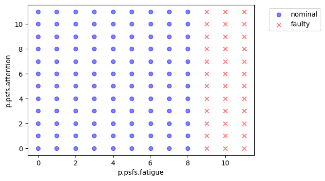
fig.savefig("nominal_psfs.pdf", format="pdf", bbox_inches = 'tight', pad_inches = 0)
mdl = RoverHuman(p={'ground': {'linetype': 'turn'}})
endresults, mdlhist = prop.one_fault(mdl, 'operator.aa.acts.look', 'failed_no_action', time=15)
endresults
endclass.rate: 1.0
endclass.cost: 0
endclass.prob: 1.0
endclass.expected_cost: 0
endclass.in_bound: False
endclass.at_finish: False
endclass.line_dist: 1
endclass.num_modes: 1
endclass.end_dist: 23.466067426611588
endclass.tot_deviation: 0.2759017544282031
endclass.faults: array(1)
endclass.classification: incomplete mission faulty
endclass.end_x: 13.33333333333334
endclass.end_y: 0.0
endclass.endpt: array(2)
traj_fig = plot_map(mdl, mdlhist)
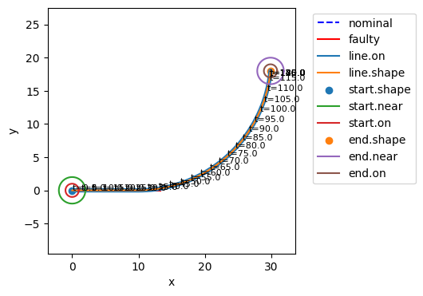
mdlhist.plot_trajectories('flows.pos.s.x', 'flows.pos.s.y')
(<Figure size 400x400 with 1 Axes>, <Axes: xlabel='x', ylabel='y'>)
mdlhist.plot_line('flows.pos.s.vel', 'flows.pos.s.ux', 'flows.pos.s.uy')
(<Figure size 600x400 with 4 Axes>,
array([<Axes: title={'center': 'flows.pos.s.vel'}, xlabel=' '>,
<Axes: title={'center': 'flows.pos.s.ux'}, xlabel='time'>,
<Axes: title={'center': 'flows.pos.s.uy'}, xlabel='time'>,
<Axes: >], dtype=object))
fs = FaultSample(fd)
fs.add_fault_times([j for j in range(0, 30, 5)])
fs
FaultSample of scenarios:
- roverhuman_fxns_operator_aa_acts_look_failed_no_action_t0
- roverhuman_fxns_operator_aa_acts_look_failed_no_action_t5
- roverhuman_fxns_operator_aa_acts_look_failed_no_action_t10
- roverhuman_fxns_operator_aa_acts_look_failed_no_action_t15
- roverhuman_fxns_operator_aa_acts_look_failed_no_action_t20
- roverhuman_fxns_operator_aa_acts_look_failed_no_action_t25
- roverhuman_fxns_operator_aa_acts_percieve_failed_no_action_t0
- roverhuman_fxns_operator_aa_acts_percieve_failed_no_action_t5
- roverhuman_fxns_operator_aa_acts_percieve_failed_no_action_t10
- roverhuman_fxns_operator_aa_acts_percieve_failed_no_action_t15
- ... (114 total)
ers, hists = prop.fault_sample(mdl, fs)
SCENARIOS COMPLETE: 0%| | 0/114 [00:00<?, ?it/s]
SCENARIOS COMPLETE: 1%| | 1/114 [00:00<00:51, 2.17it/s]
SCENARIOS COMPLETE: 2%|▏ | 2/114 [00:00<00:31, 3.60it/s]
SCENARIOS COMPLETE: 3%|▎ | 3/114 [00:00<00:24, 4.56it/s]
SCENARIOS COMPLETE: 4%|▎ | 4/114 [00:00<00:21, 5.18it/s]
SCENARIOS COMPLETE: 4%|▍ | 5/114 [00:01<00:19, 5.61it/s]
SCENARIOS COMPLETE: 5%|▌ | 6/114 [00:01<00:18, 5.86it/s]
SCENARIOS COMPLETE: 6%|▌ | 7/114 [00:01<00:26, 4.11it/s]
SCENARIOS COMPLETE: 7%|▋ | 8/114 [00:01<00:30, 3.47it/s]
SCENARIOS COMPLETE: 8%|▊ | 9/114 [00:02<00:33, 3.14it/s]
SCENARIOS COMPLETE: 9%|▉ | 10/114 [00:02<00:35, 2.94it/s]
SCENARIOS COMPLETE: 10%|▉ | 11/114 [00:03<00:36, 2.84it/s]
SCENARIOS COMPLETE: 11%|█ | 12/114 [00:03<00:37, 2.76it/s]
SCENARIOS COMPLETE: 11%|█▏ | 13/114 [00:03<00:37, 2.71it/s]
SCENARIOS COMPLETE: 12%|█▏ | 14/114 [00:04<00:37, 2.68it/s]
SCENARIOS COMPLETE: 13%|█▎ | 15/114 [00:04<00:37, 2.65it/s]
SCENARIOS COMPLETE: 14%|█▍ | 16/114 [00:05<00:37, 2.64it/s]
SCENARIOS COMPLETE: 15%|█▍ | 17/114 [00:05<00:36, 2.63it/s]
SCENARIOS COMPLETE: 16%|█▌ | 18/114 [00:05<00:36, 2.63it/s]
SCENARIOS COMPLETE: 17%|█▋ | 19/114 [00:06<00:36, 2.60it/s]
SCENARIOS COMPLETE: 18%|█▊ | 20/114 [00:06<00:36, 2.59it/s]
SCENARIOS COMPLETE: 18%|█▊ | 21/114 [00:07<00:35, 2.60it/s]
SCENARIOS COMPLETE: 19%|█▉ | 22/114 [00:07<00:35, 2.59it/s]
SCENARIOS COMPLETE: 20%|██ | 23/114 [00:07<00:34, 2.61it/s]
SCENARIOS COMPLETE: 21%|██ | 24/114 [00:08<00:34, 2.62it/s]
SCENARIOS COMPLETE: 22%|██▏ | 25/114 [00:08<00:36, 2.46it/s]
SCENARIOS COMPLETE: 23%|██▎ | 26/114 [00:08<00:29, 3.03it/s]
SCENARIOS COMPLETE: 24%|██▎ | 27/114 [00:08<00:24, 3.62it/s]
SCENARIOS COMPLETE: 25%|██▍ | 28/114 [00:09<00:20, 4.16it/s]
SCENARIOS COMPLETE: 25%|██▌ | 29/114 [00:09<00:18, 4.64it/s]
SCENARIOS COMPLETE: 26%|██▋ | 30/114 [00:09<00:16, 5.08it/s]
SCENARIOS COMPLETE: 27%|██▋ | 31/114 [00:09<00:13, 5.94it/s]
SCENARIOS COMPLETE: 28%|██▊ | 32/114 [00:09<00:12, 6.71it/s]
SCENARIOS COMPLETE: 29%|██▉ | 33/114 [00:09<00:11, 7.27it/s]
SCENARIOS COMPLETE: 30%|██▉ | 34/114 [00:09<00:10, 7.54it/s]
SCENARIOS COMPLETE: 31%|███ | 35/114 [00:09<00:10, 7.67it/s]
SCENARIOS COMPLETE: 32%|███▏ | 36/114 [00:10<00:10, 7.57it/s]
SCENARIOS COMPLETE: 32%|███▏ | 37/114 [00:10<00:18, 4.13it/s]
SCENARIOS COMPLETE: 33%|███▎ | 38/114 [00:10<00:16, 4.64it/s]
SCENARIOS COMPLETE: 34%|███▍ | 39/114 [00:10<00:14, 5.07it/s]
SCENARIOS COMPLETE: 35%|███▌ | 40/114 [00:11<00:13, 5.41it/s]
SCENARIOS COMPLETE: 36%|███▌ | 41/114 [00:11<00:12, 5.66it/s]
SCENARIOS COMPLETE: 37%|███▋ | 42/114 [00:11<00:12, 5.82it/s]
SCENARIOS COMPLETE: 38%|███▊ | 43/114 [00:11<00:19, 3.59it/s]
SCENARIOS COMPLETE: 39%|███▊ | 44/114 [00:12<00:24, 2.81it/s]
SCENARIOS COMPLETE: 39%|███▉ | 45/114 [00:12<00:27, 2.50it/s]
SCENARIOS COMPLETE: 40%|████ | 46/114 [00:13<00:27, 2.44it/s]
SCENARIOS COMPLETE: 41%|████ | 47/114 [00:13<00:26, 2.54it/s]
SCENARIOS COMPLETE: 42%|████▏ | 48/114 [00:14<00:23, 2.77it/s]
SCENARIOS COMPLETE: 44%|████▍ | 50/114 [00:14<00:13, 4.59it/s]
SCENARIOS COMPLETE: 46%|████▌ | 52/114 [00:14<00:10, 6.16it/s]
SCENARIOS COMPLETE: 47%|████▋ | 54/114 [00:14<00:08, 7.06it/s]
SCENARIOS COMPLETE: 49%|████▉ | 56/114 [00:14<00:06, 9.01it/s]
SCENARIOS COMPLETE: 51%|█████ | 58/114 [00:14<00:05, 10.00it/s]
SCENARIOS COMPLETE: 53%|█████▎ | 60/114 [00:14<00:05, 9.81it/s]
SCENARIOS COMPLETE: 54%|█████▍ | 62/114 [00:15<00:09, 5.62it/s]
SCENARIOS COMPLETE: 55%|█████▌ | 63/114 [00:15<00:08, 5.69it/s]
SCENARIOS COMPLETE: 56%|█████▌ | 64/114 [00:15<00:08, 5.77it/s]
SCENARIOS COMPLETE: 57%|█████▋ | 65/114 [00:16<00:08, 5.87it/s]
SCENARIOS COMPLETE: 58%|█████▊ | 66/114 [00:16<00:08, 5.92it/s]
SCENARIOS COMPLETE: 59%|█████▉ | 67/114 [00:16<00:12, 3.80it/s]
SCENARIOS COMPLETE: 60%|█████▉ | 68/114 [00:16<00:10, 4.19it/s]
SCENARIOS COMPLETE: 61%|██████ | 69/114 [00:17<00:09, 4.58it/s]
SCENARIOS COMPLETE: 61%|██████▏ | 70/114 [00:17<00:09, 4.75it/s]
SCENARIOS COMPLETE: 62%|██████▏ | 71/114 [00:17<00:08, 5.05it/s]
SCENARIOS COMPLETE: 63%|██████▎ | 72/114 [00:17<00:07, 5.29it/s]
SCENARIOS COMPLETE: 64%|██████▍ | 73/114 [00:18<00:11, 3.44it/s]
SCENARIOS COMPLETE: 65%|██████▍ | 74/114 [00:18<00:10, 3.88it/s]
SCENARIOS COMPLETE: 66%|██████▌ | 75/114 [00:18<00:08, 4.35it/s]
SCENARIOS COMPLETE: 67%|██████▋ | 76/114 [00:18<00:08, 4.66it/s]
SCENARIOS COMPLETE: 68%|██████▊ | 77/114 [00:18<00:07, 5.01it/s]
SCENARIOS COMPLETE: 68%|██████▊ | 78/114 [00:19<00:06, 5.31it/s]
SCENARIOS COMPLETE: 69%|██████▉ | 79/114 [00:19<00:10, 3.41it/s]
SCENARIOS COMPLETE: 70%|███████ | 80/114 [00:19<00:08, 3.90it/s]
SCENARIOS COMPLETE: 71%|███████ | 81/114 [00:19<00:07, 4.39it/s]
SCENARIOS COMPLETE: 72%|███████▏ | 82/114 [00:20<00:06, 4.80it/s]
SCENARIOS COMPLETE: 73%|███████▎ | 83/114 [00:20<00:06, 5.12it/s]
SCENARIOS COMPLETE: 74%|███████▎ | 84/114 [00:20<00:05, 5.39it/s]
SCENARIOS COMPLETE: 75%|███████▍ | 85/114 [00:20<00:08, 3.46it/s]
SCENARIOS COMPLETE: 75%|███████▌ | 86/114 [00:21<00:07, 3.97it/s]
SCENARIOS COMPLETE: 76%|███████▋ | 87/114 [00:21<00:06, 4.45it/s]
SCENARIOS COMPLETE: 77%|███████▋ | 88/114 [00:21<00:05, 4.85it/s]
SCENARIOS COMPLETE: 78%|███████▊ | 89/114 [00:21<00:04, 5.19it/s]
SCENARIOS COMPLETE: 79%|███████▉ | 90/114 [00:21<00:04, 5.47it/s]
SCENARIOS COMPLETE: 80%|███████▉ | 91/114 [00:22<00:06, 3.51it/s]
SCENARIOS COMPLETE: 81%|████████ | 92/114 [00:22<00:05, 4.01it/s]
SCENARIOS COMPLETE: 82%|████████▏ | 93/114 [00:22<00:04, 4.51it/s]
SCENARIOS COMPLETE: 82%|████████▏ | 94/114 [00:22<00:04, 4.92it/s]
SCENARIOS COMPLETE: 83%|████████▎ | 95/114 [00:22<00:03, 5.25it/s]
SCENARIOS COMPLETE: 84%|████████▍ | 96/114 [00:23<00:03, 5.52it/s]
SCENARIOS COMPLETE: 85%|████████▌ | 97/114 [00:23<00:04, 4.04it/s]
SCENARIOS COMPLETE: 86%|████████▌ | 98/114 [00:23<00:04, 3.35it/s]
SCENARIOS COMPLETE: 87%|████████▋ | 99/114 [00:24<00:05, 3.00it/s]
SCENARIOS COMPLETE: 88%|████████▊ | 100/114 [00:24<00:05, 2.79it/s]
SCENARIOS COMPLETE: 89%|████████▊ | 101/114 [00:25<00:04, 2.66it/s]
SCENARIOS COMPLETE: 89%|████████▉ | 102/114 [00:25<00:04, 2.59it/s]
SCENARIOS COMPLETE: 90%|█████████ | 103/114 [00:25<00:04, 2.53it/s]
SCENARIOS COMPLETE: 91%|█████████ | 104/114 [00:26<00:03, 2.51it/s]
SCENARIOS COMPLETE: 92%|█████████▏| 105/114 [00:26<00:03, 2.49it/s]
SCENARIOS COMPLETE: 93%|█████████▎| 106/114 [00:27<00:03, 2.48it/s]
SCENARIOS COMPLETE: 94%|█████████▍| 107/114 [00:27<00:02, 2.46it/s]
SCENARIOS COMPLETE: 95%|█████████▍| 108/114 [00:28<00:02, 2.46it/s]
SCENARIOS COMPLETE: 96%|█████████▌| 109/114 [00:28<00:02, 2.46it/s]
SCENARIOS COMPLETE: 96%|█████████▋| 110/114 [00:28<00:01, 2.46it/s]
SCENARIOS COMPLETE: 97%|█████████▋| 111/114 [00:29<00:01, 2.46it/s]
SCENARIOS COMPLETE: 98%|█████████▊| 112/114 [00:29<00:00, 2.45it/s]
SCENARIOS COMPLETE: 99%|█████████▉| 113/114 [00:30<00:00, 2.45it/s]
SCENARIOS COMPLETE: 100%|██████████| 114/114 [00:30<00:00, 2.44it/s]
SCENARIOS COMPLETE: 100%|██████████| 114/114 [00:30<00:00, 3.74it/s]
fig, ax = plot_map(mdl, hists)
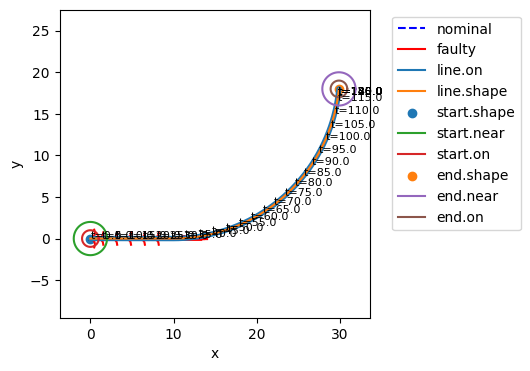
fig.savefig("nocon_trajectories.pdf", format="pdf", bbox_inches = 'tight', pad_inches = 0)
fig, ax = hists.plot_line('flows.psfs.s.attention')
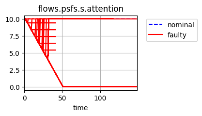
fig.savefig("nocon_attention.pdf", format="pdf", bbox_inches = 'tight', pad_inches = 0)
mdl = RoverHuman(p={'ground': {'linetype': 'sine', 'amp': 2, 'period': 2/3.14*30}})
ers, hists = prop.fault_sample(mdl, fs)
SCENARIOS COMPLETE: 0%| | 0/114 [00:00<?, ?it/s]
SCENARIOS COMPLETE: 1%| | 1/114 [00:00<00:52, 2.15it/s]
SCENARIOS COMPLETE: 3%|▎ | 3/114 [00:00<00:20, 5.41it/s]
SCENARIOS COMPLETE: 4%|▎ | 4/114 [00:00<00:17, 6.31it/s]
SCENARIOS COMPLETE: 4%|▍ | 5/114 [00:00<00:15, 6.90it/s]
SCENARIOS COMPLETE: 5%|▌ | 6/114 [00:01<00:15, 6.97it/s]
SCENARIOS COMPLETE: 6%|▌ | 7/114 [00:01<00:21, 4.91it/s]
SCENARIOS COMPLETE: 7%|▋ | 8/114 [00:01<00:26, 4.06it/s]
SCENARIOS COMPLETE: 8%|▊ | 9/114 [00:02<00:28, 3.63it/s]
SCENARIOS COMPLETE: 9%|▉ | 10/114 [00:02<00:30, 3.41it/s]
SCENARIOS COMPLETE: 10%|▉ | 11/114 [00:02<00:31, 3.27it/s]
SCENARIOS COMPLETE: 11%|█ | 12/114 [00:03<00:32, 3.19it/s]
SCENARIOS COMPLETE: 11%|█▏ | 13/114 [00:03<00:32, 3.07it/s]
SCENARIOS COMPLETE: 12%|█▏ | 14/114 [00:03<00:33, 3.02it/s]
SCENARIOS COMPLETE: 13%|█▎ | 15/114 [00:04<00:32, 3.03it/s]
SCENARIOS COMPLETE: 14%|█▍ | 16/114 [00:04<00:32, 3.03it/s]
SCENARIOS COMPLETE: 15%|█▍ | 17/114 [00:04<00:32, 3.02it/s]
SCENARIOS COMPLETE: 16%|█▌ | 18/114 [00:05<00:32, 2.99it/s]
SCENARIOS COMPLETE: 17%|█▋ | 19/114 [00:05<00:31, 2.99it/s]
SCENARIOS COMPLETE: 18%|█▊ | 20/114 [00:05<00:32, 2.93it/s]
SCENARIOS COMPLETE: 18%|█▊ | 21/114 [00:06<00:32, 2.87it/s]
SCENARIOS COMPLETE: 19%|█▉ | 22/114 [00:06<00:31, 2.90it/s]
SCENARIOS COMPLETE: 20%|██ | 23/114 [00:06<00:31, 2.89it/s]
SCENARIOS COMPLETE: 21%|██ | 24/114 [00:07<00:30, 2.95it/s]
SCENARIOS COMPLETE: 22%|██▏ | 25/114 [00:07<00:36, 2.43it/s]
SCENARIOS COMPLETE: 24%|██▎ | 27/114 [00:07<00:23, 3.76it/s]
SCENARIOS COMPLETE: 25%|██▍ | 28/114 [00:08<00:19, 4.36it/s]
SCENARIOS COMPLETE: 25%|██▌ | 29/114 [00:08<00:17, 4.81it/s]
SCENARIOS COMPLETE: 26%|██▋ | 30/114 [00:08<00:16, 5.06it/s]
SCENARIOS COMPLETE: 28%|██▊ | 32/114 [00:08<00:11, 7.30it/s]
SCENARIOS COMPLETE: 30%|██▉ | 34/114 [00:08<00:09, 8.51it/s]
SCENARIOS COMPLETE: 32%|███▏ | 36/114 [00:08<00:09, 8.59it/s]
SCENARIOS COMPLETE: 32%|███▏ | 37/114 [00:09<00:15, 4.94it/s]
SCENARIOS COMPLETE: 34%|███▍ | 39/114 [00:09<00:11, 6.27it/s]
SCENARIOS COMPLETE: 35%|███▌ | 40/114 [00:09<00:11, 6.65it/s]
SCENARIOS COMPLETE: 36%|███▌ | 41/114 [00:09<00:10, 6.92it/s]
SCENARIOS COMPLETE: 37%|███▋ | 42/114 [00:09<00:10, 7.03it/s]
SCENARIOS COMPLETE: 38%|███▊ | 43/114 [00:10<00:17, 4.09it/s]
SCENARIOS COMPLETE: 39%|███▊ | 44/114 [00:11<00:22, 3.05it/s]
SCENARIOS COMPLETE: 39%|███▉ | 45/114 [00:11<00:26, 2.60it/s]
SCENARIOS COMPLETE: 40%|████ | 46/114 [00:12<00:29, 2.34it/s]
SCENARIOS COMPLETE: 41%|████ | 47/114 [00:12<00:30, 2.20it/s]
SCENARIOS COMPLETE: 42%|████▏ | 48/114 [00:13<00:31, 2.12it/s]
SCENARIOS COMPLETE: 44%|████▍ | 50/114 [00:13<00:17, 3.57it/s]
SCENARIOS COMPLETE: 46%|████▌ | 52/114 [00:13<00:12, 4.99it/s]
SCENARIOS COMPLETE: 47%|████▋ | 54/114 [00:13<00:10, 5.99it/s]
SCENARIOS COMPLETE: 49%|████▉ | 56/114 [00:13<00:07, 7.82it/s]
SCENARIOS COMPLETE: 51%|█████ | 58/114 [00:13<00:06, 8.99it/s]
SCENARIOS COMPLETE: 53%|█████▎ | 60/114 [00:14<00:05, 9.16it/s]
SCENARIOS COMPLETE: 54%|█████▍ | 62/114 [00:14<00:08, 5.97it/s]
SCENARIOS COMPLETE: 56%|█████▌ | 64/114 [00:14<00:07, 6.81it/s]
SCENARIOS COMPLETE: 57%|█████▋ | 65/114 [00:14<00:06, 7.02it/s]
SCENARIOS COMPLETE: 58%|█████▊ | 66/114 [00:15<00:06, 7.02it/s]
SCENARIOS COMPLETE: 59%|█████▉ | 67/114 [00:15<00:10, 4.40it/s]
SCENARIOS COMPLETE: 61%|██████ | 69/114 [00:15<00:07, 5.83it/s]
SCENARIOS COMPLETE: 61%|██████▏ | 70/114 [00:15<00:06, 6.36it/s]
SCENARIOS COMPLETE: 62%|██████▏ | 71/114 [00:16<00:06, 6.70it/s]
SCENARIOS COMPLETE: 63%|██████▎ | 72/114 [00:16<00:06, 6.85it/s]
SCENARIOS COMPLETE: 64%|██████▍ | 73/114 [00:16<00:09, 4.11it/s]
SCENARIOS COMPLETE: 66%|██████▌ | 75/114 [00:16<00:06, 5.72it/s]
SCENARIOS COMPLETE: 67%|██████▋ | 76/114 [00:16<00:06, 6.23it/s]
SCENARIOS COMPLETE: 68%|██████▊ | 77/114 [00:17<00:05, 6.64it/s]
SCENARIOS COMPLETE: 68%|██████▊ | 78/114 [00:17<00:05, 6.83it/s]
SCENARIOS COMPLETE: 69%|██████▉ | 79/114 [00:17<00:08, 4.14it/s]
SCENARIOS COMPLETE: 71%|███████ | 81/114 [00:17<00:05, 5.79it/s]
SCENARIOS COMPLETE: 72%|███████▏ | 82/114 [00:17<00:05, 6.37it/s]
SCENARIOS COMPLETE: 73%|███████▎ | 83/114 [00:18<00:04, 6.78it/s]
SCENARIOS COMPLETE: 74%|███████▎ | 84/114 [00:18<00:04, 6.94it/s]
SCENARIOS COMPLETE: 75%|███████▍ | 85/114 [00:18<00:06, 4.14it/s]
SCENARIOS COMPLETE: 76%|███████▋ | 87/114 [00:18<00:04, 5.78it/s]
SCENARIOS COMPLETE: 77%|███████▋ | 88/114 [00:19<00:04, 6.35it/s]
SCENARIOS COMPLETE: 78%|███████▊ | 89/114 [00:19<00:03, 6.78it/s]
SCENARIOS COMPLETE: 79%|███████▉ | 90/114 [00:19<00:03, 6.94it/s]
SCENARIOS COMPLETE: 80%|███████▉ | 91/114 [00:19<00:05, 4.16it/s]
SCENARIOS COMPLETE: 82%|████████▏ | 93/114 [00:19<00:03, 5.83it/s]
SCENARIOS COMPLETE: 82%|████████▏ | 94/114 [00:20<00:03, 6.42it/s]
SCENARIOS COMPLETE: 83%|████████▎ | 95/114 [00:20<00:02, 6.82it/s]
SCENARIOS COMPLETE: 84%|████████▍ | 96/114 [00:20<00:02, 6.97it/s]
SCENARIOS COMPLETE: 85%|████████▌ | 97/114 [00:20<00:03, 5.04it/s]
SCENARIOS COMPLETE: 86%|████████▌ | 98/114 [00:21<00:03, 4.11it/s]
SCENARIOS COMPLETE: 87%|████████▋ | 99/114 [00:21<00:04, 3.66it/s]
SCENARIOS COMPLETE: 88%|████████▊ | 100/114 [00:21<00:04, 3.40it/s]
SCENARIOS COMPLETE: 89%|████████▊ | 101/114 [00:22<00:04, 3.19it/s]
SCENARIOS COMPLETE: 89%|████████▉ | 102/114 [00:22<00:03, 3.12it/s]
SCENARIOS COMPLETE: 90%|█████████ | 103/114 [00:22<00:03, 3.06it/s]
SCENARIOS COMPLETE: 91%|█████████ | 104/114 [00:23<00:03, 3.02it/s]
SCENARIOS COMPLETE: 92%|█████████▏| 105/114 [00:23<00:03, 2.95it/s]
SCENARIOS COMPLETE: 93%|█████████▎| 106/114 [00:23<00:02, 2.92it/s]
SCENARIOS COMPLETE: 94%|█████████▍| 107/114 [00:24<00:02, 2.90it/s]
SCENARIOS COMPLETE: 95%|█████████▍| 108/114 [00:24<00:02, 2.86it/s]
SCENARIOS COMPLETE: 96%|█████████▌| 109/114 [00:24<00:01, 2.83it/s]
SCENARIOS COMPLETE: 96%|█████████▋| 110/114 [00:25<00:01, 2.81it/s]
SCENARIOS COMPLETE: 97%|█████████▋| 111/114 [00:25<00:01, 2.83it/s]
SCENARIOS COMPLETE: 98%|█████████▊| 112/114 [00:25<00:00, 2.85it/s]
SCENARIOS COMPLETE: 99%|█████████▉| 113/114 [00:26<00:00, 2.87it/s]
SCENARIOS COMPLETE: 100%|██████████| 114/114 [00:26<00:00, 2.85it/s]
SCENARIOS COMPLETE: 100%|██████████| 114/114 [00:26<00:00, 4.28it/s]
fig, ax = plot_map(mdl, hists)
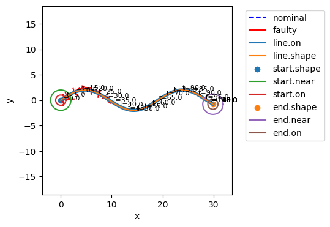
fig.savefig("nocon_trajectories_sine.pdf", format="pdf", bbox_inches = 'tight', pad_inches = 0)
fig, ax = hists.plot_line('flows.psfs.s.attention')
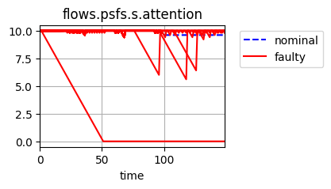
fig.savefig("nocon_attention_sine.pdf", format="pdf", bbox_inches = 'tight', pad_inches = 0)